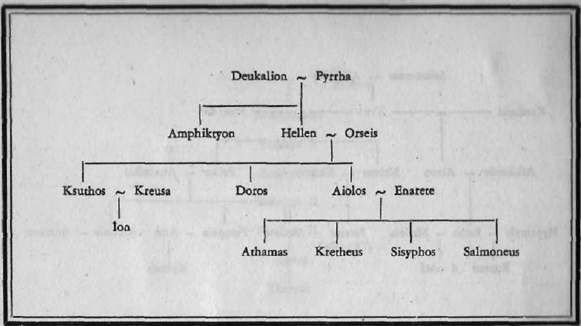
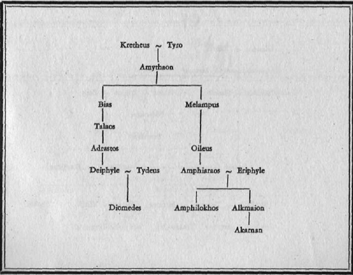

Troya önünde büyük Aias’ın kapatması, bir Phrygia kralının kızıydı. Sophokles'in "Aias" tragedyasında önemli bir rol oynar (Aias).
Aiakos'la Endeis'in oğlu, Aias'ın babası, Peleus'un kardeşi (Tab. 21). Çocukluğunda Peleus'la birlikte üvey kardeşleri Phokos'u öldürmeleri üzerine (Phokos) Telamon Aigina'dan sürülür, Salamis'e yerleşir (Aiakos). Herakles'le birlikte Argonaut'lar seferine, Kalydon avına katılır. Gene Herakles'le birlikte birinci Troya seferine gider ve Herakles Laomedon'un kızı Hesione'yi kurtarınca Telamon bu kızla evlenir. Bu evlenmeden Teukros doğar (Teukros). Troya savaşı sırasında Telamon Salamis'te oğullarının dönmesini bekler. Teukros Aias'sız yurda dönünce öfkelenir ve onu kovar. Nasıl öldüğü belli değildir (Aias).
Odysseus'la Penelope'nin biricik oğulları. Babası Troya savaşına gidince Telemakhos daha kundakta çocuktur. Adı ilkin Odysseus'un kendisini savaşa götürmek için gelen elçilere oynadığı oyun sırasında geçer (Palamedes). Sonra Odysseia'nın başında ona gene rastlanır: Büyümüş, delikanlı olmuştur, İthake sarayında taliplerin babasının malını, mülkünü çarçur etmelerine üzülür, onları kovmak için elinden bir şey gelmez, sonunda babasının yaşayıp yaşamadığını öğrenmek için yola çıkmaya karar verir: Troya'dan dönen yiğitlere babasından haber sormaya gidecektir. Mentor kılığında tanrıça Athena'nın kılavuzluğunda olan bu yolculuk Odysseia'nın ilk dört bölümünde anlatılmış, bu yüzden de bu bölümlere Telemakhia denmiştir (Odysseia). Nestor ve Melenaos'un konaklarına varır, onlarla görüşür, Troya savaşçılarının anılarını uzun boylu anlatmalarına fırsat verir (Menelaos, Helena). Dönüşünde taliplerin kurduğu pusuya düşmez, İthake limanına girmeden şehir dışındaki bir kumsala çıkar, biraz önce de Odysseus aynı yere çıkmış ve domuz çobanı Eumaios'un kulübesinde konuk edilmiştir. Baba-oğul önce tanışmadan buluşup konuşurlar, sonra Odysseus dilenci kılığı altında gerçek kimliğini açıklayınca, taliplerin hakkından gelmek için planlar kurarlar. Telemakhos talipleri öldürmekte babasına yardım eder, anasıyla babasının buluşmasına seviniri Başkaca da bir rolü yoktur Odysseia'da.
Herakles'le Auge'nin oğlu Telephos dramatik bir öykünün kahramanıdır. Daha anasının karnındayken tanrı sözcüsünün doğacak olan çocuğun dayılarını öldürecegini bildirmesi ana-ogul Auge ile Telephos'un bir sandıkla denize atılmalarına yol açar. Kurtulurlar ve Mysia kıyılarına çıkarlar (Auge). Başka bir anlatıma göre yalnız Auge Mysia'ya gider, kral Teuthras'a satılır, Telephos ise Arkadya'da bir dağa bırakılır, orada çobanlarca büyütülür ve dağda kaza ile iki adam öldürür: Bu iki adam kendi dayılarıdır. Telephos Arkadya'dan sürülür. Delphoi tapınağına gidip tanrı sözcüsünü yoklar, Mysia ya gitmesi gerektiği cevabını alır. Mysia'ya gelir, ama anasını tanımaz, Auge'nin de oğlunu tanımaması az daha ana ile oğlun evlenmelerine yol açacakken vaktinde önlenir. Auge kral Teuthras'in kendisiyle evlenir, bir süre sonra Teuthras ölünce Mysia krallığı Telephos'a kalır.
Bu sırada Akhalar Troya'ya karşı ilk seferlerine girişirler, donanma yanlış rota ile Mysia kıyılarına yanaşır. Telephos Troya kral soyuyla akrabalığı yüzünden Akhalara karşı koyar, yiğitçe çarpışır ve birçok önemli kişileri öldürür, ama AkhilIeus karşısına dikilince korkuya kapılıp koşmaya başlar. Tanrı Dionysos araya girer ve Telephos'un bir asma kütüğüne ayağının takılıp düşmesini sağlar. Arkasından gelen AkhiIIeus da onu kalçasından vurur. Akha donanması çekilip gider, sekiz yıl kadar uzun bir zaman da Anadolu kıyılarına uğramaz olur, ama Telephos'un yarası iyileşmemektedir. Danıştığı biliciler yarayı kim açtıysa o iyileştirebilir derler. Telephos da bu kez Aulis'te Akhilleus'u bulmaya gelir. Euripides "Telephos" adlı (kayıp) tragedyasında Mysialı kahramanı dilenci kılığında çıkartırmış Akhilelus'un önüne, ağlatır, sızlatır, istediğini elde ettirirmiş. AkhiIIeus kargısının pasından bir parça sürer yaraya, Telephos iyileşir ve şükran borcunu Akhalara Troya'ya çıkacak doğru yolu göstermekle öder. Telephos Troya savaşına karışmaz, ama oğlu Eurypylos Mysialı bir bölükle Priamos'un yardımına koşar (Eurypylos).
Poseidon'la ilgili kötü cinler. Yarı insan, yarı balık biçimindeymişler, yılan kılığına girdikleri de olurmuş. Telkhinler Rodos adasında yaşarmış ve dünyada ne kadar deprem, kar, dolu, yağmur gibi afetler varsa, hepsi onların elinden çıkarmış. Tufanı da onlar önceden bilip haber vermişler. Rodos adasının sularına Styks'in sularını kanştırarak toprağın verimsiz olmasına yol açmışlar. Tufandan kaçarken biri Lykia'ya gelmiş ve orada, Ksanthos ırmağı kenarında Lykialı Apollon'a bir tapınak kurmuş, derlerdi.
Telkhinlerin bazı efsanelerde Kabeirlerle karıştırıldığı görülür, o zaman da sanatçı cinler olarak gösterilirler: Maden işlemesini bilirler, tanrı heykelleri ve Poseidon'un yabasını yapmışlar. Ama aslında kötü ve yararsız olduklarından Apollon oklarıyla, ya da Zeus yıldırımlarıyla onları öldürmüş. Denizde birer kaya olmuşlar.
Tenedos'a (bugün Bozcaada) adını veren kurucu kahraman. Kyknos'un oğlu sayılır (Kyknos). Üvey anası Tenes'i kendisine göz dikmiş olmakla suçlar. Kyknos da buna inanır ve Tenes'le kız kardeşini bir sandığa kapatıp denize atar. Poseidon tanrı gençleri korur ve o zaman Leukophrys adıyla anılan Tenedos'a çıkarır. Sonraları Kyknos yanlışlığını anlar ve Tenes'le barışmak üzere Tenedos'a gelir, ama Tenes babasının gemisini karaya bağlayan halatı keser, böylece her türlü ilişkiyi koparmış olur. Akhalar Troya'ya sefer yaptıklarında Tenedos'a varınca, Tenes onları taşlar, ama Akhilleus'un kargısıyla vurularak ölür.
Bkz. Aedon.
Musalardarı biri, dansı ve hafif şiiri simgeler (Musalar).
Uranos'la Gaia'nın kızı, dişi Titanlardan sonuncusu (Tab. 1, 2). Denizin verimliliğini simgeleyen Tethis tanrı Okeanos'la birleşir ve üç bini aşkın dişi varlık doğurur (Tab. 4). Dünyanın bütün ırmakları da Okeanos'la Tethys'ten doğma sayılır. Bir efsaneye göre Tethys Zeus'un Kronos'a karşı savaşı sırasında Hera'yı yanına almış ve büyütmüştü. Hera İda dağında Zeus'u bulup onunla sevişmeyi kafasına koyunca, kavga etmiş olan Okeanos'la Tethys'in yanına gitmek üzere olduğunu, onu bildirmeye geldiğini ileri sürer (Hera).
(1) Skamandros'la İda dağı nympha'sı İdaia'nın oğlu, Troya kral soyunun atası (Tab. 16). Bir efsaneye göre Teukros Troas'ın yerlisi değildir, Ege kıyılarına Girit'ten babası Skamandros'la birlikte gelmiştir. Anadolu'ya göçmeden önce kehanete başvurmuşlar, nereye yerleşmeleri gerektiğini sormuşlar, tanrı sözcüsü de "yer oğullarının saldırısına nerede uğrarsanız" yanıtını vermiş. Troya yöresine gelip açıkta yattıkları bir gece farelerin kalkanlarını, yaylannın kirişlerini kemirdigini görmüşler, kehanetin gösterdiği yerin burası olduğunu anlayarak oraya yerleşmişler ve Apollon Smintheus'a (fareleri kovan Apollon) bir tapınak kurmuşlar. Teukros sonraları Dardanos'u konuk eder ve kızı Batieia ile evlendirip tahtını ona bırakır (Dardanos, Smintheus).
(2) Telamon'la Hesione'nin oğlu, Aias'ın kardeşi (Tab. 21). Troya soyundan olduğu halde Teukros agabeysi Alas'la birlikte Akhalar safında dövüşür, ordunun en usta okçusudur, birçok savaşçıyı öldürür. Aias'ın ölümü sırasında Mysia'ya yaptığı bir çapulculuk seferine çıktığından orada yoktur ve olayları önleyemez. Dönüşünde büyük bir umutsuzluğa kapılıp canına kıymak ister. Dönüşü de uğursuz olur, Salamis'e vardığında babası Telamon Aias'ı getirmedi diye onu adaya almaz (Aias, Telamon). Kıbrıs'a gider, orada Yeni Salamis diye bir şehir kurar, Kıbrıs kralının kızıyla evlenir, birçok çocuğu olur, biri Kilikya'da Olbe kentinin kurucusu genç Aias'tır.
Mysia kralı, Telephos efsanesinde sözü geçer. Krallığı Kaikos (Bakırçay) ırmağının agzındaymış. Efsanesi de şöyledir: Dağda avlanırken Teuthras'ın karşısına bir yaban domuzu çıkmış, kendisini öldürmemesi için insan sesiyle yalvarmış, vurulduktan sonra da Artemis Orthosia tapınağına sığınmış. Kutsal hayvanı öldürdü diye Teuthras cüzam ve bir çeşit çılgınlığa çarpılmış, ama sonradan iyileşmiş. Auge ile Telephos'u Mysia'da konuklayan odur (Auge, Telephos).
Bitkisel gelişmeyi, doğanın fışkırmasını dile getiren bu ad:
(1) Musalardan birinin adıdır. Yetki alanı komedyadır. Apollon'la sevişip Korybantları doğurduğu da anlatılır (Musalar).
(2) Zeus'la Eurynome'nin kızı, Kharitlerin biri (Kharitler).
İlyada'da adı geçen Trakyalı bir ozan. Serüvenini İlyada'da Homeros şöyle anlatır (İl. II, 594 vd.):
Musalar buluşmuşlardı eskiden Dorion'da,
keseceklerdi Trakyalı Thamyris’in şarkısını
Oikhalia'dan gelmişti Thamyris,
kendine güveniyor, övünüyordu,
kalkanlı Zeus 'un kızlarını, Musaları bile
yenerim diyordu şarkı söylemede.
Onlar da kızdılar, kör ettiler onu,
tanrısal şarkıyı aldılar elinden,
çalgı çalmayı unutturdular ona.
Çok yakışıklı diye bilinen bu ozan lyra çalmakta da, ezgi söylemekte de çok üstünmüş, bir theogonia, bir kosmogonia, bir de titanomakhia yazdığı söylenir. Müzikte de birçok yenilikler yapmış, ama ölçüyü kaçırıp Musalarla boy ölçüşmeye kalkışıp olanaklarından yoksun edilince, lyrasını bir ırmağa atmış, bir daha da şarkı söylememiş. Bazı kaynaklarda Homeros'un bu Thamyris'in çömezi olduğu söylenir.
Ölümü simgeleyen tanrı. Nyks'in çocuğu, Uyku'nun kardeşidir. Birbirinden ayrılmayan Hypnos'la Thanatos yeraltında Tartaros'un derinliklerinde otururlar (Hes. Theog. 755 vd.).
Pontos'Ia Gaia'nın oğlu, Elektra ile evlenir ve İris'le Harpyaları üretir (Tab. 6).
Troyalı Antenor'un karısı Theano Athena Tapınağının rahibesidir. Troya kadınları, başlarında kraliçe Hekabe olmak üzere, Athena tanrıçaya parlak bir şal adamaya geldiklerinde, Theano onları karşılar ve sunu yaparken de tanrıçaya yakarır (İl. VI, 298 vd.). Theano'nun Antenor'dan birçok çocukları olur, kocasının başka bir karıdan olan oğlunu da özene bezene yetiştirir. Antenor'la birlikte Troya'yı ele verdiği anlatılan efsanelerinden biridir (Antenor).
Bkz. Amphiaraos, Eteokles, Adrastos.
Uranos'la Gaia'nın kızı, dişi Titanlardan biri, Hyperion'la evlenir ve Eos, Helios ve Selene'yi doğurur (Tab. 4).
Themis, Uranos'la Gaia'nın kızıdır, yani ikinci tanrı kuşağından ve dişi Titanlardandır. Hesiodos, Themis'in adını Titanlar arasında saydıktan sonra, uzun süre ondan söz etmez, ta ki Olympos tanrıları Titanları yensin ve Zeus, Kronos'tan doğma öbür kardeşleriyle egemenliği paylaşıp yeni düzeni kursunlar. Ondan sonra da Zeus her kuşaktan tanrıçalarla birleşme ve üretme yoluna gider. İlk evliliği Metis’ledir, onu Athena'ya gebe bırakır. İkinci evliliği, Titan kızı Themis'ledir. Hesiodos bu birleşmeyi kısaca şöyle tanımlar (Theog. 901 vd.):
Sonra ışık saçan Themisle evlendi Zeus,
bu tanrıçadan doğdu Horalar:
Eunomia, Dike ve bereketli Eirene,
ki korurlar insanların ekip biçtiklerini.
Ve Moiralar, akıllı Zeus 'un çok saydığı
Klotho, Lakhesis ve Atropos,
ki onlar verir yalnız İnsanlara
mutlu ya da mutsuz yaşama paylarını.
Peki Themis kimdir? Doğada mevsimlerin, yılların ve sanatların düzenini sağlayan bir tanrıça üçlüsüyle canlı varlıkların arasında hayatla ölüm dengesini kurup, kader ipliklerini ellerinde tutan ikinci bir tanrıça üçlüsünü doğuran bu güçlü tanrısal varlık kimdir ve neyi simgeler? Themis, kanundur, kuraldır, yasanın ta kendisidir. Ama gelip geçici yasa değil, tanrılar dünyasında da, insanlar dünyasında da değişmez, evrensel ve ölümsüz doğa yasasıdır. Tanrısal yasadır, onun karşıtı insansal yasa ise Nomos'tur.
Themis Olympos'ta yaşar. Tanrıların toplantılarına başkanlık eder, Olympos'taki düzeni de o korur. Homeros da tanır, bilir onu, Hera'yla, Zeus'la konuştuğunu gösterir İlyada'da. Ama çok söz edilmez Themis'ten, efsanesi, öyküsü yoktur. Her yerde ve her zaman vardır o kadar.
Ürettiği tanrısal varlıklarla sürdürür etkisini, bu varlıklar da tanrılardan daha güçlü oldukları için, ehramın tepesinde oturur gibidir Themis. Adı da koymak, yerleştirmek, oturtmak anlamına gelen bir kökten türemiştir (Hora’lar, Moira’lar).
Yunanlılann en eski ve en önemli theogoniası olan Hesiodos'un eseri besbelli ki doğulu kaynaklara dayanmakta, Fenikeliler yoluyla Sümer ve Babil inanç ve efsanelerini yansıtmaktadır. Ne var ki bağdaşım tam olmuştur: Hesiodos'un tanrıların doğuşunu, tanrı soylarının ve kuşaklarının birbirlerini izleyip gelişmelerini dile getiren yapıtı, Yunan kaynaklı inanç ve efsaneleriyle kaynaşmış ve tutarlı bir bütün haline gelmiştir. Hele Hesiodos'un kurduğu yönetim, Homeros destanlarında da uygulanan şecere gösterme eğilimiyle tam bir uyum içinde ilkçağın sonlarına dek benimsenmiş ve ozanlara olduğu kadar, hellenistik çağın ve Roma'nın mythograph denilen mythos yazarlarına da örnek olmuştur. Dünyanın yaratılışı için de bir yorum veren Theogonia, Yunanlıların tek dinsel kitabı olarak kalmış denebilir, ama şunu da belirtmeli ki, bu gelenek yazma kaynak olmaktan öte gidememiş, ne tam anlamıyla dini ve kültü, ne de bambaşka bir yol tutan düşünce akımını etkileyememiştir. O kadar ki, Hesiodos'un, çoğu yabancı kaynaklardan aldığı kimi tanrısal varlıkları Yunan yazını doğa dışı, yaban ve kaba sayarak yadırgamış ve atmıştır.
Hesiodos'un Theogonia'sı gene de tek yaratılış mythos'u olarak ayrıntılarıyla incelemeye değer.
Her şeyden önce Khaos vardı der Hesiodos, (Khaos) ama Khaos'un ne olduğunu tanımlamaz, hemen Khaos'tan Gaia yani Toprak'ın çıktığını anlatır ve ne olduğunu tam anlatmadığı bir birleşme ilkesi olarak Eros'u yani Sevgi tanrıyı da araya sokar, ama belli ki Yunan kaynaklı bu varlığı, saydığı öbür unsurlarla iyice birleştiremediği için "parthenogenesis" yani kendi kendine doğurma, meydana getirme ilkesine uyarak, Khaos'tan Erebos'u (yeraltı karanlığı) ve Nyks'i (yerüstü karanlığı) yani Gece'yi çıkarır ve şöyle der (Theog. 126 vd.):
Toprak bir varlık yarattı kendine eşit:
Dört bir yanını saran Uranos, yıldızlı Gök'ü,
Mutlu tanrıların sürekli, sağlam yurdunu.
Gaia sonra kendi kendine yüksek dağları ve Pontos'u, yani denizi yaratır. Sonra da Uranos'la sevişip üç kuşak dev yaratır: Titanlar, Kykloplar ve Hekatonkheirler.
Bu Titanlar tanrıların ikinci kuşağı sayılır, birinci kuşak Gaia ile Uranos olmak üzere. Burada Theogonia boyunca hep rastlanacak bir süreçle karşılaşırız: Bir kuşak kendinden sonraki kuşağın doğup gelişmesine izin vermez, çünkü gücünün elinden alınacağından, egemenliğinin başka ele, sonraki kuşağa geçeceğinden korkar. Bu yüzdendir ki Uranos çocuklarını yok etmeye uğraşır (Uranos).
Gaia son doğan oğlu Kronos'un eline bir tırpan verir ve koca Uranos gece arzudan yanıp tutuşarak indiği, sardığı zaman Toprağı, pusuda bekleyen Kronos fırlar, tırpanla keser babasının hayalarını. Denize saçılan sperma köpükleriyle kanlardan tanrıça Aphrodite ve Erinysler doğar (Aphrodite, Erinys). Kronos egemenliği ele alır, ikinci tanrı kuşağı birincisini yenmiştir, Hesiodos erkek Titanların dişi Titanlarla evlenmelerini ve bu evlenmelerden doğan çocukları sayar.
İkinci kuşağın da dramı vardır. Kronos Rheia ile evlenir ve şu evlatları doğurur: Hestia, Demeter, Hera, Hades, Poseidon ve en sonuncusu Zeus.
Ama koca Kronos yiyordu ilk çocuklarını
analarının kutsal karnından çıkıp da
dizleri üstüne oturdukça her biri.
Korkuyordu Uranos 'un mağrur
torunlarından biri
ölümsüzler arasında kral olacak diye.
Uranos'la Gaia bunun böyle olacağını bildirmişlerdi Kronos'a. Ne var ki Rheia'ya yardım edenler onlardır. Zeus doğar doğmaz Girit'e kaçırırlar, Kronos'a da bir taş yuttururlar. Zeus büyüyünce, babasına bu taşla birlikte yuttuğu bütün kardeşlerini de kusturur. Egemenliği ele geçirmek için hazırlığa girişir, ilk iş Uranos'un yeraltına kapattığı Yüz Kollu devleri ve Kyklopları kurtarmak. Tepegözlerden gök gürlemesini, şimşek ve yıldırımı alır, Yüz Kolluların da yardımıyla korkunç bir savaşa girişir. Titanomakhia denilen bu savaş babasının kardeşleri Titanlara karşıdır (Devler ve Tanrılar Savası). Bu yaman savaşta zaferi kazanan Zeus üçüncü kuşağı, yani Olympos tanrılarının saltanatını kurar.
Mutlu tanrılar bitirince bu işlerini,
şereflerini zorla kurtarınca Titanlardan,
uydular Toprak Ana'nın öğütlerine,
engin bakışlı Zeus'a başvurdular,
ölümsüzlerin başına geçmesini,
Olympos'un kralı olmasını istediler ondan
ve Zeusgeçip başına tanrıların
yetki paylarını dağıttı her birine.
Theogonia Zeus'un ve öbür Olympos tanrılarının evlilikleriyle, çocuklarını saymakla sona erer.
Melampus soyundan bir kâhin. Odysseia'da sözü geçer: Telemakhos Pylos dönüşünde bu kâhini gemisine alır ve İthake'ye konuk olarak götürür. Argosludur, ama adam öldürdüğü için sürülür. Theoklymenos kuşların uçuşundan anlam çıkarır: Odysseus'un yakında geleceğini ve talipleri öldüreceğini önceden haber verir.
Bir roman kişisi: Kâhin Kalkhas'ın kız kardeşi olarak gösterilir. Günün birinde kumsalda oynarken korsanlarca kaçırılır, Karia kralına satılır. Babası Thestor onu aramaya çıkar, gemisi batar, o da Karia kıyılarına çıkar ve kralın sarayına köle olur. Theonoe'nin kız kardeşi Leukippe de babasının dönmediğini görünce erkek kılığına girer ve Karia'ya gelip aynı saraya rahip olur. Theonoe kız kardeşini tanımaz, yakışıklı rahibe gönül verir, ona teklifte bulunur. Leukippe hiç yanaşmayınca, Thestos'u onu öldürmekle görevlendirir. Thestos da kızını tanımaz, tutuklu olduğu yere girip kaderinden yakınacak olur. Kız babasına kendini tanıtır, derken Thestor Theonoe'yi öldürmeye kalkar, kılıcını kınından çıkarırken Theonoe babasını anarak ağlar, hepsi birbirini tanırlar. Karia kralı da üçünü birden armağanlara boğup yurtlarına geri gönderir.
Troya önündeki Akha ordusunda bir asker olan Thersites İlyada'da krallar kralı Agamemnon'a dil uzatmaya yeltenen bir adamdır (Agamemnon). Destanın yalnız bir bölümünde adı geçen Thersites şöyle tanımlanır (İl. II, 212 vd.):
Yalnız Thersites kopardı yagarayı, konuştu
ileri, geri,
o Thersites ki saçmalar dururdu biteviye,
kralları kızdırmak için laf ederdi,
gelişigüzel,
Argosluları güldürsündü yeter ki,
İlyon 'a gelen en çirkin kişiydi o,
bacakları çarpık, bir ayağı aksaktı,
sırtı kambur, göğsü çöküktü içeri,
kafası omuzlarının üstünde sivriydi,
tek tüktü başında saçı.
Thersites Agamemnon'a karşı orduda hemen hemen herkesin düşündüğünü dile getirdiği halde, büyüğe saygısızlık etti diye Odysseus'un hışmına uğrar, tartaklanır (İl. II, 257 vd.):
Bak sana diyeyim, bu dediğim de olacak
hani,
böyle zıpırlık eder görürsem seni bir daha,
varsın Odysseus'un omuzları üstünde
durmasın başı,
bana bir daha Telemakhos'un babası
demesinler,
tutup anadan doğma etmezsem seni
çırılçıplak,
ayıp yerlerini örten gömleğini çıkarmazsam
sırtından,
adamakıllı pataklamazsam seni,
göndermezsem tez giden gemilere ağlaya
ağlaya.
Böyle dedi, değneğiyle sırtına, omuzlarına
vurdu,
Thersites oldu iki büklüm,
gözlerinden yaşlar aktı tane tane.
Sırtında altın değnekle vurulan yerde
kanlı bir şiş peyda oldu birdenbire.
Diz çöktü, baktı acı acı, sildi yaşlarını,
tatlı bir gülme aldı herkesi.
Thersites'e Shakespeare'in "Troilus'la Kressida" dramında da rastlarız. Shakespeare herhalde yukardaki dizelerden esinlenerek Thersites'i Akha ordusunun soytarısı olarak canlandırır.
Theseus, Dor ırkının büyük kahramanı Herakles'in örneği üzerine Atina'da uydurulmuş bir kişidir, efsanesi de Herakles efsanesinin motifleriyle bir araya getirilmiş, bu yakıştırmalara Atina'nın ülkülerini yansıtan kişisel ve toplumsal bazı temalar eklenmiştir. Ayrıca Atinalılar Theseus'u efsanelik değil de tarihsel bir kişi sayarlardı. "Theseus'suz hiçbir şey yoktur" Atina'da özdeyiş olmuştu.
Aigeus'la Aithra'nın oğludur (Tab. 24), ama asıl babasının Aigeus değil de, tanrı Poseidon olduğu ileri sürülürdü (Aigeus, Aithra). Troizen'de dedesi Pittheus'un yanında büyüyen Theseus Atina kralının oğlu olduğunu bilmiyordu, çünkü Aigeus Aithra'ya çocuğa altına sandallarıyla kılıcını sakladığı bir kayayı kaldıracak duruma gelmedikçe kim olduğunu söylememesini buyurmuştu. Theseus böylece büyüyor ve gün geçtikçe güçlenip yürekleniyordu. Herakles bir gün Pittheus'un sarayına gelmiş ve sırtında taşıdığı aslan postunu yere atmıştı, ortalıkta kim varsa hepsi korkudan kaçışmış, yalnız Theseus kılıcını çıkarıp aslanın üstüne yürümüştü. On altı yaşına basınca anası delikanlıyı kayanın önüne götürmüş, Theseus da koca kayayı kaldırarak babasının altına sakladığı soykaları ortaya çıkarmıştı. O zaman kral oğlu olduğunu ögrenince hemen Atina'ya gitmek üzere yola çıkmış, Pittheus kara yolunda bir sürü canavar ve eşkıya olduğunu bildirerek ona denizden gitmesini söylediği halde, Theseus gerçekten kral oğlu olduğunu Attika halkına göstermek İçin kara yolunu seçmiş ve Atina'ya gelmeden bölgeye korku salan bir sürü dev, azman ve vahşi hayvanları bir bir yere sererek şehre varmıştı. Kephisos ırmağının sularında döktüğü kanlardan temizlenip arınmış ve Ageus'un karşısına çıkmıştı. Ne var ki o sıralarda kral Aigeus büyücü Medeia'nın etkisi altında bulunuyordu. Medeia bu gencin tahta göz dikeceğini anlamış, onu şölende zehirlemeyi kararlaştırmıştı, ama Theseus, sofraya oturunca etini kesmek için Aigeus'un kılıcını çıkarmış, böylece babası oğlunu tanımış, Medeia'yı kovarak Theseus'u bağrına basmıştı. Bu arada Aigeus'un kardeşi Pallas'ın elli oğlu Theseus'u devirmek için ona pusu kurmuşlar, yiğit de hepsini öldürmüş, bu suçundan arınmak için de bir yıl Atina'dan uzaklaşmıştı. Ama Atina bir yıl sonra Theseus'u çağırır, çünkü Girit kralı Minos'a yedi kızla yedi erkek gönderip onları yem olarak Minotauros'a vermek zorundadır. Theseus Atinalı gençlerle birlikte Girit'e gider ve Ariadne, Minotauros maddelerinde anlatıldığı gibi, Atina'yı bu korkunç vergiden kurtarır. Dönüşte Ariadne'yi kaçırır, ama tanrı Dionysos'un emriyle olacak, Naksos adasında bırakır. Atina'ya yaklaşınca Aigeus'un dediği gibi beyaz yelkenler açmayı unutur, geminin kara yelkenle geldiğini gören kral da oğlunun öldüğünü sanarak kendini denize atar.
Girit dönüşü Theseus kral olur ve Attika ülkesinde yeni ve çok hayırlı bir düzen kurar: Tanrıça Athena şerefine Panathenaia, Poseidon şerefine de İsthmos şenliklerini düzenler, halkın çıkarlarını gözeten, zenginlerle soyluların ayrıcalıklarını kısıtlayan toplumsal yasalar çıkartır. Bir yandan da yiğitliklerini sürdürür: Arkadaşı Lapith kralı Peirithoos'la birlikte Argonaut'lar seferine, Kalydon avına katılır, Oidipus'u Attika'ya kabul edip rahatça ölmesini sağlar, bir de Atina'ya saldıran Amazonlara karşı koyar. Amazonları püskürtmeden kraliçeleri Antiope'yi kaçırır, onunla evlenir, Hippolytos adında bir oğlu olur. Antiope'nin ölümünden sonra Theseus Phaidra ile evlenir. Phaidra'dan iki oğlu olur: Akamas ve Demophon.
Peirithoos'la birlikte ölüler ülkesine iner, amacı ölüler kraliçesi Persephone'yi kaçırıp yeryüzüne getirmektir. O Hades ülkesinde iken Atina'da işler karışır: Soylu sınıflar Theseus'un yaptığı sosyal reformları ortadan kaldırmak için Dioskurları yardıma çağırırlar, Helene'nin kardeşleri hem Theseus'un kaçırıp Aithra'nın yanına bıraktığı kızı geri almak, hem de Menestheus'u Atina tahtına çıkarmak için bunu fırsat bilirler. O sırada Theseus'la Peirithoos Hades ülkesinde alıkonurlar: Hades'le Persephone'nin sofrasında yemek yerlerken oturdukları iskemlelerin üstüne mıhlanırlar. Uzun zaman oldukları yerden kalkamazlar, sonunda Herakles Hades'e inip Theseus'u kurtarır, ama Peirithoos "Unutma sandalyesi" denen bu yerden bir daha kalkamaz. Atina'ya dönüşünde Theseus ülkesini karmakarışık bir durumda bulur ve orada kalmaktansa Skyros adasında kral Lykomedes'in yanına sığınmayı yeğ görür. Ne var ki Lykomedes onu arkadan vurarak öldürür. Atinalılar Theseus'u her zaman anarlar, onu Marathon savaşında (İ. Ö. 490) gördüklerini ileri sürerlerdi.
Thespios Atina kralı Erekhteus'un oğludur. Attika'dan ayrılıp Boionia yöresinde Thespiai şehrini kurmuştu. Herakles efsanesinde rol oynar: On sekiz yaşındayken yiğit Kithairon aslanını öldürmeden önce onun sarayına gelmiş, Thespios da Herakles'in her gece elli kızlarından biriyle yatmasını sağlamıştı (Herakles)
Thetis deniz ihtiyarı Nereus'la Doris'ten doğmuş elli Neteus kızlarının en ünlüsüdür (Tab. 6). Hera'nın yetiştirdiği Thetis'e tanrılardan Poseidon da, Zeus da gönül vermişler, ama onun doğuracağı oğlun babasından daha güçlü olacağını öğrendikten sonra güzel denizkızından el çekmişler ve onu bir ölümlüyle evlendirmeye karar vermişler. Koca olarak seçtikleri Peleus'a varmamak için Thetis denizkızlarına özgü niteliğini kullanarak kılıktan kılığa geçmiş, ama sonunda ona varmaya razı olmuş. Peleus'la Thetis'in düğünü Olympos'ta tanrılar sofrasında kutlanır, mesele çıkmasın diye kavga tanrıça Eris şölene çağrılmaz, ne var ki altın elmayı masanın üstüne atmasıyla tanrıçalar arasında güzellik yarışmasına yol açar (Eris). Thetis ölümlü kocasıyla mutlu olmaz, bu zorlu evlenmede neler çektiğini Hephaistos'a yana yakıla anlatır (İl. XIII, 429 vd., Akhilleus). Doğurduğu çocukları ölümsüz kılmak için bir bir ateşin üstüne tutup yaktığını, aynı şeyi oğlu Akhilleus için yaparken Peleus tarafından yakalanıp kovulduğunu efsaneler anlatır. Bu olay üzerine Thetis Peleus'tan ayrılır ve kız kardeşleriyle yaşamak üzere denizin dibine dalar. Ama çilesi tükenmiş değildir Thetis'in, biricik oğlu Akhilleus'un trajik alın yazısı yüzünden sürüp gider.
İlyada'nın birinci bölümünde Akhilleus Agamemnon'la kavga edip barakasına çekilmeye karar verince, deniz kıyısına gidip ağlaya ağlaya anasını çağırır (İl. I, 358 vd.):
Ulu ana, ta dipte, babasının yanında, onu
duydu,
fırladı kırçıl denizin üstüne bir duman gibi,
oturdu gözyaşı döken oğlunun önüne,
eliyle okşadı onu, konuştu, diller döktü:
"Ne diye ağlarsın, oğul, yüreğine giren acı
ne?
Derdini anlat bana, ben de bileyim".
Akhilleus uğradığı haksızlığın öcünü Zeus alsın ister, bunun için de anası Thetis'i Olympos'a gönderir: Baştanrıya yaptığı iyilikleri kendisine hatırlatacak, bunun karşılığında oğlu savaşa katılmadıkça Akhaların yenilmesini elde edecektir. Thetis gerçekten de Zeus'a büyük bir hizmette bulunmuştur: Günün birinde Hera, Poseidon ve Athena baştanrı Zeus'a karşı ayaklanacak olmuşlar, zincire vurmuşlar Kronos oğlunu, ama Thetis yüz kollu devlerden Briareus'u getirmiş, çözdürmüş ona Zeus'un zincirlerini. Bu yüzdendir ki baş-tanrı Thetis'i yanında yalvarır görünce, hayır diyemez, söz verir ve sözünü de Hera'nın çığlıklarına, kıskançlık gösterilerine karşın tutar. Gümüş ayaklı tanrıça Hephaistos'a da böyle bir yardımda bulunmuştur: Hera'nın çirkin diye Olympos'tan aşağıya attığı ünlü topalı Thetis'le kardeşi Eurynome almışlar, Okeanos ırmağının bir mağarasında dokuz yıl saklamışlardı (Hephaistos). Bu şükran borcunu ödemek içindir ki Hepaistos Akhilleus'a göz kamaştırıcı silahlar yapar. Thetis'in ana yüreği Troya savaşı boyunca kanar, oğlunun kaderini değiştirmek için boşuna uğraşır durur. Ana-ogul arasındaki buluşmalar İlyada'nın en dokunaklı sahnelerindendir. Nereus kızlarıyla birlikte kırçıl denizden çıkması ve dalması denizkızlarının yaşamını olanca renkleriyle serer gözlerimizin önüne (Nereus).
(1) Lemnos kralı, Hypsipyle'nin babası. Dionysos'la Ariadne'nin oğlu sayılır. Lemnos kadınları adadaki bütün erkekleri öldürünce Thoas'ın kızı Hypsipyle'nin eliyle nasıl kurtarıldığı hakkında Hypsipyle, Argonaut'lar maddelerine bakınız.
(2) Tauris kralı Thoas bir efsaneye göre yukarda adı geçen Lemnos kralının aynıdır. Lemnos'tan kaçtıktan sonra Karadeniz'e Tauris'e sığınmış ve Tauris'li Artemis kültünü kurarak rahibesi olan İphigeneia eliyle gelen yabancıları tanrıçaya kurban edermiş. Orestes'le Pylades İphigeneia'yı kaçırınca Thoas onları kovalarmış ve bu kovalama sırasında öldürülmüş (İphigeneia, Orestes).
Pylos kralı Nestor'un iki oğlundan biri. Kardeşi Antilokhos'la birlikte Troya savaşına katılır, Antilokhos Memnon'un elinden ölünce, onunla çarpışır. Troya atına giren Akha yiğitlerindendir, babası Nestor'la yurduna döner.
Bkz. Bakkhalar.
Bkz. Atreus, Aigisthos.
Argo gemisinin dümencisi. Maryandyn'Ier ülkesinde ölür (Argonaut'lar).
Uranos'la Gaia'dan doğan altı erkek evlada Titan, altı kız evlada da Titanides denir (Tab. 1-4). Titan dev anlamına gelir. Hesiodos Titan sözcüğünde çifte bir etimoloji gösterir: Uzatmak, yayılmak anlamına gelen "titainein" ve öç anlamına gelen "tisis" (Theog. 207) ama Titanlar Kykloplar ve Hekatonkheirler gibi doğa dışı, azman yaratıklar değildir.
Erkek Titanlar şunlardır: Okeanos, Koios, Krios, Hyperion, İapetos ve Kronos.
Dişi Titanlar da, Theia, Rheia, Themis, Phoibe ve Mnemosyne'dir.
Zeus'la birleşen Themis ve Mnemosyne dışında, öbür Titanlar ve Titanidler aralarında evlenirler. Hesiodos Theogonia'nın büyük bir bölümünü bu Titanlardan doğan yaratıkları saymaya ayırır.
Okeanos kendi gibi bir deniz tanrıçası olan Tethys'le evlenip Okeanos kızlarını meydana getirirler. Hesiodos bunların üç bin olduğunu söyler ve başta Styks olmak üzere Asia, Elektra, Doris, Eurynome, Dione, Kalypso gibi bazılarının adlarını sayar.
Koios Phoibe ile birleşir, Asteria ve Leto'yu meydana getirirler. Kendileri de çocukları da parlaklığı simgeleyen göksel varlıklardır. Leto Zeus'la birleşip Apollon'la Artemis'i doğurur.
Krios, Pontos'un kızlarından Eurybie ile evlenir. Çocukları, Astraios, Pallas ve Perses'tir.
Hyperion'la Theia'nın birleşmesinden Eos (Şafak), Helios (Güneş) ve Selene (Ay) meydana gelir.
İapetos, Okeanos kızı Asia (ya da Klymene) ile evlenir, çocukları Atlas, Prometheus, Epimetheus ve Menoitios'tur.
Bkz. Devler ve Tanrılar Savası.
Troya kralı Laomedon'un oğlu, Priamos'un ağabeysi Tithonos çok yakışıklı bir gençmiş. Şafak tanrıça onu kaçırıp sarayına yerleştirmiş. Memnon'la Emathion adında iki oğulları olmuş. Eos'un sevgilisine ölümsüzlüğü verdiği halde sürekli gençliği bağışlamayı unutmasından dolayı Tithonos'un ihtiyarlıktan büzülüp büzülüp bir çekirge haline gelmesi hakkında Eos maddesine bakınız.
Dev Tityos'u yeraltı ülkesinde gören Odysseus şöyle anlatır (Od. XI, 576 vd.):
Tityos'u gördüm sonra da, çok şanlı
Toprağın oğlunu,
toprağa uzanmış, dokuz dönüm yer
kaplamıştı toprakta,
iki akbaba, konmuş iki yanma,
bağrını deşip didikliyorlardı ciğerini,
ama o, elleriyle kovamıyordu akbabaları bir
türlü,
çünkü Leto 'ya saldırmıştı, Zeus'un ulu
karısına.
Başka bir anlatıma göre bu azgın devi cezalandıran Zeus değil, Leto'nun çocukları Apollon'la Artemis'tir.
İlyada'da sözü geçen Tlepolemos Herakles'in oğullarından biridir. Troya savaşına Rodos'tan gelme gemilerle katılır. Rodos'a göçmesinin nedeni de şudur: Babalarının ölümünden sonra Herakles oğulları Eurystheus'un hışmına uğrayıp Peloponez'e bir türlü yerleşemeyince, Tlepolemos büyük amcası Likymnios'la birlikte Argos'a çağrılır ve orada kalma izni alır, ama Likymnios'la arasında çıkan bir kavgada amcasını öldürür. Bunun kaza ile olduğu, Tlepolemos'un bir öküzü, ya da bir köleyi vurmak için kaldırdığı sopayı istemeyerek amcasının başına indirdiği söylenir. Her ne hal ise Tlepolemos Argos'ta kalamaz, Rodos'a göçer ve orada Lindos, İalysos'la Kameiros diye üç şehir kurar.
Lydia dağı Tmolos (Bozdağ) Dionysos dininin kaynağı olarak gösterilir. Ayrıca kraliçe Omphale'nin kocasına verilen addır. Tmolos adlı başka bir Lydia kralından da söz edilir: Ares'in oğlu olan bu kral Artemis'in arkadaşlarından birine saygısızlık etmiş, tanrıça da üstüne azgın bir boğa salmış, onu öldürtmüş. Oğlu ölüsünü Bozdağ'a gömmüş, bu yüzden dağa Tmolos adı verilmiş.
Triopas ya da Triops çeşitli kaynaklı efsanelerde adı geçen bir kişidir. Aiolos, ya da Poseidon'un oğlu sayılır, Helios tanrıyla Rhodos'un oğullarının biri de Triopas adıyla anılır (Heliosoğulları). Triopas Knidos şehrini kuran kahramandır.
Demeter efsanesinde rol oynayan Eleusisli kahramandır (Demeter).
Bkz. Athena.
Poseidon'la Aınphitrite'nin oğlu. Hesiodos bu deniz tanrısını şöyle tanımlar (Theog. 930 vd.):
Toprağı sarsıp gümbürdeten Poseidon
Amphltrite tanrıçayla evlendi
ve onların sevişmelerinden
büyük Titan doğdu, gücü kuvveti sonsuz,
o Triton ki dalgaların dibinde
anasının ve soylu babasının yanında
altından bir sarayda oturur
korkular saçarak çevreye.
Triton efsanelerde büyük bir rol oynamaz. Argonaut'lara Akdeniz'e çıkmanın yolunu gösterdiği söylenir. Birçok kaynaklarda Libya'da Tritonis gölünde oturduğu, Pallas adlı bir kızı olduğu, bu kızın tanrıça Athena'nın efsanesinde rol oynadığı belirtilir. Triton kimi zaman bir tanrıya değil de, birçok deniz yaratığına verilen ad olur. Poseidon tanrının alayında yer alır ve çokluk belden yukarı insan, belden aşağı balık olarak imgelendirilir.
Priamos'la Hekabe'nin en küçük oğlu (Tab. 16). Troilos yirmi yaşını bulursa Troya'nın alınamayacağı üstüne bir fal varmış. Akhilleus Troilos'u daha bu yaşa basmadan öldürmüş. Nerede ve nasıl öldürdüğü konusunda efsanelerde ayrılık vardır: İlyada'da arabayla savaşırken öldürüldüğü söylenir, başka bir anlatıma göre Akhilleus onu çeşmede atlarına su içirirken arkadan vurmuş, ya da kardeşi Polyksene ile birlikte kurban edilmiş. Geç bir efsane Akhilleus'un bu güzel delikanlıya tutulduğunu, Troilos isteklerine boyun eğmeyince sığındığı Tymbraios Apollon'un tapınağında kargısıyla yere serdiğini anlatır. Troilos ve uydurma bir kişi olan Kressida Shakespeare'in bir oyununun baş kişileridir.
Bkz. Agamedes.
Troya kral soyunun atalarından biri, Troya'ya adını veren kurucu kahraman (Tab. 16). Efsanede bir rol oynamaz.
Yunan mythos'unun Tufan efsanesi Behçet Necatigil'in "Mitologya"sında şöyle anlatılır:
"Zeus gün geçtikçe daha günahkâr olan insanları bir tufanla yok etmeye karar vermişti. Bu tufandan sadece Deukalion'la karısı Pyrrha kurtuldular. Çünkü Deukalion'un babası Prometheus, oğluna bir tekne yapmasını öğütlemişti. Karı-koca, bindikleri bu teknede dokuzuncu gün Parnassos dağına ayak bastılar. Zeus'tan yeni insanlar yaratmasını dilediler. Zeus onlara, 'Ananın kemikleri'ni arkalarına atmalarını buyurdu. Prometheus'un açıklaması üzerine Deukalion'la Pyrrha, toprağın taşlarını arkalarına attılar. Böylece Deukalion'un arttığı taşlardan erkekler, Pyrrha'nın attıklarından da kadınlar olmak üzere yeni bir insan soyu türedi.
Pyrrha, yeryüzünün ilk kadını Pandora'nın kızıdır".
Hesiodos Theogonia'da Pandora'ya çok Önem verdiği halde Tufan efsanesine hiç değinmez.
Rutullerin kralı, Aeneas İtalya'ya gelince onunla hem siyasal, hem de kişisel nedenlerle çarpışır ve Troyalı kahramanın elinden can verir (Aeneas).
Oineus'un oğlu, Aitolia kralı Tydeus Diomedes'in babasıdır .(Tab. 23). İtalya'da taşkın canlı diye nitelenir, Diomedes'i tutan Athena tanrıça ona savaşta güç vermek için göğsüne babasının sarsılmaz gücünü koyduğunu söyler (İl. V, 125). Gençliğinde adam öldüren Tydeus Argos kralı Adrastos'un yanına sığınır. Adrastos onu sındırır ve kızı Deipyle ile evlendirir (Adrastos). Onunla birlikte Thebai'ye karşı yediler seferine katılır. Bu savaşta Thebai'nin en güçlü savunucularından Melanippos'la karşılaşır, düşmanı onu karnından vurur, ama Tydeus da onu öldürür. Athena can çekişen Tydeus'a ölümsüzlük vermek üzeredir ki, Amphiaraos Tydeus'un onu savaşa sürüklemesinin öcünü almak için Melanippos'un kesik kafasını ona getirir, azgın yiğit de düşmanının beynini sömürmekten kendini alamaz. Bu vahşi eylemden tiksinen tanrıça Athena Tydeus'a ölümsüzlük bahşetmekten vazgeçer, Tydeus da savaş meydanında ölür (Amphiaraos, Deipyle).
Tykhe Okeanos kızlarından biridir. Latince adı Fortuna olan bu tanrıça Behçet Necatigil'in "Mitologya"sında şöyle tanımlanır:
"Uygun kader, şans, umulmayan başarı tanrıçası, Homeros'un eserlerinde görülmez, en eski şairler içinde onun en güzel tasviri Pindaros'tadır (Olymp. Ode, XII). Hellenismus devrinde Tykhe, bütün öteki tanrıları unutturan çok yaygın bir tanrıça oldu. Caesar'ın kendi Tykhe'sine olan güveni meşhurdur. Bu güven, onu sonunda bütün ikazları hiçe sayarak mahvolmaya götürdü. Tebdil giymiş olarak, bir balıkçı kayığında Dyrrhachium'dan İtalya'ya geçmek isterken, kayıkçının fırtınadan çekinmesi üzerine, ona şöyle bağırmıştı: 'Durma, sen Caesar'ı ve Caesar'ın Tykhe'sini götürüyorsun!'. Tanrıça Tykhe, resimlerde çok yer alır. Elinde bereket boynuzu yahut bir gemi dümeniyle veya yuvarlanan bir küre üzerinde kanatlı olarak tasvir edilir. Yunanlılar şansın açık olsun yerine 'Agathe Tykhe' (İyi Tykhe ile!) deyimini kullanırlardı.
İtalya'da Latium bölgesinde eski bir kültü olan şans, baht tanrıçası Fortuna, İsa'dan önce birinci yüzyıldan sonra Yunanlıların Tykhe'siyle özleştirildi, Tykhe'nin Latince adı oldu".
Sparta kralı Tyndareos Leda'nın kocası ve Helene, Klytaimestra ile Dioskurların ölümlü babasıdır (Tab. 12). Gençliğinde Sparta'dan sürülür, Aitolia kralı Thestios'un yanına sığınır, kızı Leda'yı aldıktan sonra Herakles'in yardımıyla krallığını geri alır. Helene'nin çok sayıda talipleri arasında seçmek için Odysseus'un önerisine uyar ve kızını Menelaos'a verir (Helene). Tyndareos'un ölümü üstüne kaynaklar birbirini tutmaz, tanrı Asklepios'un onu ölümsüzleştirdiği söylenirdi.
Adı İlyada'da Typheus diye geçen Typhon Khrysaor'la Kallirhoe'nin oğludur, Kkhidna ile birleşerek Orthos, Kerberos, Khimaira ve Hydra gibi azmanlar üretir (Tab. 6). Hesiodos Theogonia’nın başlangıcında Typhon için bu soy ağacını verdikten sonra, sonradan eklenmiş bir parçada onu yanardağ tanrısı olarak çarpıcı renklerle tanımlar: Titanlar gökten kovulduktan sonra Gaia Tartaros'la son bir kez birleşip Typhon'u doğurmuş (Theog. 825 vd.):
Zor İşler İçin yaratılmıştır kolları,
ayaklan yorulmak bilmez bu yaman
tanrının,
yüz yılan başı yükselir omuzlarından
çıkarıp korkunç kara dillerini,
bu ejder kafalarındaki gözlerde
ateş alev saçar kara kaşları altından.
Zeus bu azmanı da alt etmek gerektiğini anlar ve onu öldürmeye kalkışır; bir gümbürtüdür kopar doğada:
Bir yangın sardı menekşe rengi suları.
Bir yandan gök gürültüsü ve şimşekler,
Bir yandan ejderhanın saldığı alevler,
kaynıyordu yer, gök, deniz baştan başa,
bir depremdir başlıyordu, önü alınmaz,
ürpertiler içindeydi Hades bile...
Zeus toparlayıp var gücünü, hışmını,
yakalayıp şimşeklerini, yıldırımlarını
dikildi Olympos'un başına ve vurdu!
Birden ateşe boğdu, çepeçevre,
korkunç canavarın inanılmaz başlarını.
Yediği kamçıyla duraklayan Typhon
yıkıldı yere, kolu, kanadı kırılarak
ve toprak inledi inim inim.
Bir alev fışkırdı yıldırım yiyen devden,
yükseldi sarp, kara vadilerinden yukarı
dibine düştüğü Etna dağının.
Salmoneus'la Alkidike'nin kızı (Tab. 23). Tyro bir ırmak tanrıya aşıkmış, her gün kıyılarına gider, ağlarmış, günün birinde tanrı Poseidon ırmaktan çıkıp onunla birleşmiş. Tyro ikiz çocukları doğurmuş: Pelias'la Neleus. Ama bunları dağa bırakmış. İkizleri büyüyünce Salmoneus'un karısı Sidero'dan eziyet gören Tyro'yu kurtarmaya gelirler. Tyro bundan sonra amcası Kretheus'la evlenir ve Aison'u doğurur (Neleus, Pelias, Aison).
Tyrrhenoi diye anılan Etrüsklerin atası. Lydialı bir önder sayılan Tyrrhenos kimi kaynakta Herakles'le Omphale'nin, kiminde de Telephos'un oğlu ve Tarkhon'un kardeşi olarak gösterilir. Troya savaşından sonra Ege kıyılarında kıtlık baş göstermiş, Tyrrhenos da halkından bir bölük alıp İtalya'ya göçmüş.
Odysseus'un Latince adı. Odysseus maddesine bakınız.
Musalardan biri. Adından da anlaşıldığı gibi gök bilimini simgeler (Musalar).
Gök'e kosmik varlık ve ilk tanrı kuşağı arasında erkek ve baba tanrı olarak verilen ad. Uranos Gaia ile birleşerek birçok tanrısal varlıklar türetir, bunları doğar doğmaz Toprak'ın bağrına tıkaması, oğlu Kronos'un elinden hayalarının kesilmesi ve bu olay üzerine egemenliğin ikinci tanrı kuşağına geçmesi Gaia, Aphrodite, Theogonia ve Kronos maddelerinde anlatılmıştır (Tab. 1-4).
Bkz. Hypnos.
Çok eski bir Latin tanrıçasının adıdır. Meyve bahçelerinin koruyucusu olarak saygı gören Venüs sonradan Yunan etkisi altında Aphrodite ile bir tutulmuştur. Aeneas'ın anası sayılan Venüs İmparatorluk çağında Gens İulia'nın atası sayılmıştır (Aeneas).
Akşam yıldızının Latincesl (Hesperos).
Evlerde ocağı koruyan Çok eski bir Roma tannçası. Sonradan Yunan pantheon'unun Hestia'sıyla bir tutulmuş, ama Roma'da her zaman ayrı bir saygı görmüştür. Vesta'nın tapımına bakan Vestales rahibeleri Roma'nın en iyi aile kızları arasından seçilir, ömür boyu kız kalmaya ant içer ve devletin başrahibi Pontifex Maximus yönetiminde devlet ocağının ateşini yanar tutmakla görevliydiler. Roma'nın kurucuları Romulus'la Remus'un bir Vesta rahibesinden doğma oldukları, Vesta tapımının Romulus tarafından Roma'ya sokulduğu ileri sürülürse de, Vesta tapınağının en eski zamanlarda Palatinus'un, yani ilk Roma surlarının dışında bulunması, tipik Latium evleri gibi yuvarlak bir ilişkisi olmadığını gösterir. Vesta'ya özgü hayvan olarak eşek gösterilir ve Vesta bayramı olan Vestalia (haziran ortasında) şenliklerinde eşekler başlarında çiçek çelenkleriyle bayram alayında gezdirilirdi. Bu özellik sonradan uydurulmuş tutarsız bir efsaneyle açıklanmak istenmiş, tanrı Priapos'la Vesta arasında bir ilişki kurulmuştur (Priapos).
Sonradan Yunan tanrısı Hephaistos'la bir tutulan eski Roma tanrısı. Tapımını, Roma'ya Etrüskler getirmiş. Volcanalia denilen bayramlarında tanrıya sunu olarak ateşe küçük balıklar ve başka hayvanlar atılırdı, buna karşılık insanların hayatları korunmuş olurdu. Hiçbir efsanesi yoktur.
Ate, gaflet tanrıçasının suç işlemeye ittiği kişiyi suçundan arındırmak, kurtarmak için Zeus'un kızları Litai adlı tanrıçalar araya girerler. İlyada'dan alınmış aşağıdaki parçada Litai "Yalvarılar", Ate "Suç" diye çevrilmiştir (il. IX, 502 vd.):
Gün olur yanılır, suç işlerler insanlar,
güzel adaklar, sunularla yalvarırlar,
kurban yağlarıyla yumuşatırlar tanrıları.
Ulu Zeus 'un kızlarıdır Yalvarılar,
topal, yüzleri buruşuk, gözleri şaşı,
koşarlar Suç 'un arkasından dertli dertli,
ama güçlüdür, çevik ayaklıdır Suç,
Yalvarılardan çok önde koşar,
insanlara kötülük ede ede dolaşır
yeryüzünü,
Yalvarılarsa yetişir, kötülüğü düzeltmeye
kalkarlar.
Dinlerler kendilerine saygı gösterenleri,
onlara yardım ederler canla başla.
Kulak asmayan olursa, yalvarırlar Zeus'a,
Suç takılsın ona, ettiğini bulsun derler.
(Ate, Erinysler).
Efes kazılarını dolaşıp da Yedi Uyurlar mağarasına uğramamak günahtır. Hiçbir yer insanın ruhuna bu kadar derinden seslenmez Efes'te. Kızgın güneşin altında balla kabaran incir ağaçları bile masal anlatır insana.
Çok eski zamanlarda İsa'ya âşık yedi genç bir mağaraya kapanmışlar Efes'te: Yemliha, Mislina, Mürselina, Mernuş, Tebernuş, Sazenuş, Kefeştatayuş’muş adları, bir de köpekçikleri varmış: Kıtmir. Ne yapsınlar ki barınamamışlardı koca şehirde; yıllar geçmiş, bir zamanlar Paulus'un vaazlarına kulak asmayan Efesliler, güçlü hatibin şehre ikinci gelişinde bu İsa dininde bir şeyler var diye düşünmeye başlamışlar. Hem yalnız Paulus değil, Yuhanna da gelmemiş miydi, İsa'nın anası dediği bir kadıncağızı getirip yerleştirmemiş miydi Lysimakhos surlarının ötesinde pınarların yemyeşil çağladığı bir yamaca? Oldum olası tanrı anaları görmüştür Efesliler, şehrin kurucusu Amazon tanrıçaydı, ulu Artemis'ten doğmuştu yeryüzüne ne kadar canlı, ne kadar bitki varsa. Ama Artemls papazları para babası olmuşlar, habire yığıyorlardı altınları tanrıçanın sütundan bir ormanla çevrili tapınağına, fakir fukarayı hiç sokmuyorlardı içeriye; banka olmuştu orası. Yoksulların koruyucusu İsa'dan yanaydı bu yedi genç, ama Hıristiyan olduklarını söyleyemiyorlardı açık açık, çünkü devlet denizaşırı göçmüş, Roma denilen şehre yerleşmişti. Roma'nın zorbası Decius puta tapmayan kim varsa kafasını uçurtuyordu Efes'te. İsa'ya tapan bu yedi genç de Panayır dağının dibine dek inen bir mağara bulmuşlar, oraya sığınmışlardı. Mağara kapısına Kıtmir'i bekçi dikmişlerdi. Bir gece derin derin uyuyorlarmış ki, Decius'un polisleri gelip mağarayı koca kayalarla örtmüşler. Yedi genç aldırmamışlar karanlığa, uyuyorlarmış nasıl olsa. Aylar, yıllar, yüzyıllar geçmiş, yedi genç uyuyor, Kıtmir de uyuyormuş. Bir sabah incir ağaçlarının altında keçilerini otlatan bir çoban mağaranın önündeki kayanın biraz kaydığını görmüş, var gücüyle yaslanmış kayaya, onu biraz oynatmış, derken mağaranın içine bir güneş ışını sızmış. Kıtmir uyanmış, havlamış, Yedi Uyurlar da uyanmışlar ve bakmışlar ki yiyecek bir şey yok. Git, demişler Mernuş'a, fırından bir ekmek al. Eline bir bakır para da vermişler. Mernuş çıkmış, Panayır dağını kıvrılıp Mermer caddeye iniyormuş ki, kaldırımların üstünde haçlar görmüş. Uyku sersemi olduğundan pek aldırmamış, başı öne eğik yürümeye de alışıkmış öteden beri. Pazar yerine gelip dükkâna girince, parayı uzatmış, bir ekmek almış. Fırıncı parayı elinde evirmiş, çevirmiş, Mernuş'un yüzüne bakmış ve "Hırsız!" diye basmış çığlığı! Koşuşmuşlar, sımsıkı yakalamışlar Mernuş'u: "Kalpazan!", "Nerede basmış bunu?", "Mağaradan geldi", "Hırsız yatağı orası!". Mernuş şaşkına dönmüştü. Neyse ki uyanık bir polis paraya daha yakından bakacak olmuş: "Decius. Ha bildim, devletlu imparatorumuzun dedesiydi, "Yok canım, Theodosius'un dedesi de Theodosius'tu". Bir tartışmadır gitmiş, kavgaya son vermek için almışlar Mernuş'u Yuhanna kilisesine götürmüşler. Oradan başpapazla birlikte mağaraya, iş anlaşılmış, başpapaz da fetvayı vermiş: Bu bir mucizeydi, ama Ruhülkudüs'ün yapamayacagı mucize yoktu. O arada imparator İkinci Theodosius nasıl haber almışsa almış, Bizans'tan Efes'e koşagelmiş, takdis etmiş Yemliha'yı, Mislina'yı, Mürselina'yı, Mernuş'u, Tebernuş'u, Sazenuş'u ve Kefeştatayuş'u, Kıtmir'i de okşamış. Sonra Efesli yedi gençle sadık köpekleri yine uykuya dalmışlar ve o gün bugün bir daha uyanmamışlar.
Yunanca Hekatonkheires diye anılan yüz kollu devleri Hesiodos şöyle tanımlar (Theog. 147 vd.):
Başka oğulları da oldu Gaia ile Uranos'un,
üç yaman oğul ki korkuyla anılır adları:
Kottos, Briareus, Gyes, başı göklerde
çocuklar.
Her birinin yüz kolu vardı
omuzlarından sarkan, korkunç,
ve elli başı güçlü omuzlarının üstünde.
Korkunçtu koca bedenlerinin amansız
gücü.
Uranos öbür oğulları gibi bunlardan da kuşkulanıp, kapatır Yüz Kolluları yerin dibine, ne var ki Zeus ve Olympos tanrıları bu azman yaratıkları Titanlara karşı savaşlarında ortak olarak kullanmayı akıl eder ve çıkarırlar Hekatonkheirleri yeraltından. Devlerle tanrılar arasındaki savaş da o zaman kızışır. Olymposluların zaferiyle sonuçlanan bu savaşın son bölümünü şöyle anlatır Hesiodos (Theog. 713 vd.):
Ama ön saftaki Kottos, Briareus, Gyes,
savaşa doymayan bu yüz kollu devler
azdırdılar yeni baştan savaşı:
Üç yüz taş birden fırladı
bu devlerin güçlü kollarından,
kapkara saldırılarla ezdiler Titanları,
yol yol toprağın altına tıktılar onları,
vurdular zincire yendiklerini
ve gökler ne kadar uzaksa topraktan
toprağın o kadar altına gömdüler onları.
Yüz Kolluları da Zeus Tartaros'a kapatılan Titanlara bekçi olarak diker:
Durur orada sadık birer bekçi gibi
Gyes, Kottos ve coşkun yürekli Briareus.
Zagreus Orpheus gizemlerinde adı geçen bir tanrıdır. İlk Dionysos sayılır. Zeus Onu üretmek için bir yılan biçimine girip yeraltı tannrıçası Persephone ile birleşmiş. Doğdoğduktan sonra da Hera'nın hışmına uğramasın diye onu Apollon'la Kuretlere vermiş. Onlar de Zagreus'u Parnassos dağının ormanlarında saklamışlar. Ama Hera saklandığı yeri bulmuş ve Titanları genç tannyı kaçırmakla görevlendirmiş. Zagreus Titanlann elinden kurtulmak için biçimden biçime girmiş, bir ara bir boğa olmuş, devler de boğayı boynuzlarından yakalayarak parçalamışlar, etlerini çig çiğ ya da kızartarak yemişler, Pallas Athena Zagreus'un yalnız yüreğini kurtarabilmiş. Apollon kemiklerini Delphoi'de gömdüğü halde, Zeus da oğlunun daha atmakta olan yüreğini ya kendi gövdesine almış, ya da Semele'ye yutturmuş. Zagreus bir süre sonra da İkinci kez dünyaya gelmiş.
Astraios'la Şafak tanrıça Eos'un oğlu, batı yeli (Tab. 8; Rüzgârlar).
Bkz. Amphion.
Tanrıların tanrısı, tanrıların babası, büyüğüdür Zeus. Bu yetkiyi nasıl elde ettiğini anlatmadan önce, adının kökeni ve anlamı üstünde duralım-.
a) Kökeni. Hint-Avrupa dillerinin hemen hepsinde görülen bir kökten üremedir Zeus adı. Bu sözcüğün kaynağında olan diu- kökü (ki aslında V ile değil de, en eski Yunancada bulunup, sonraları alfabeden silinen 'digamma' harfiyle yazılırdı) Yunancada zeu- ve di- olarak iki biçimde belirir. Nitekim çekiminde de bu çifte kökenlik görülür: Nom. Zeus (özne hali); Voc. Zeu! (ey Zeus!); Gen. Dios (Zeus'un); Dat. Dii (Zeus'a); Acc. Dia (Zeus'u). Sanskritçede, Pers ve İtalya uluslarının dillerinde, sonradan da Latince ve Latinceden gelme dillerde bu kök zeu-, dyeu-dieu-, diu- diye belirir; örneğin eski Hintçe Devas, die, diewas; Latincede Iupiter (ya da İuppiter) Zeus Baba anlamına gelen Diespiter'den; ama bunun gen. hali Iovis (İupiter'in); aynı kuruluş eski Hintçede Dyaus-pıta, Gök Baba; gene Latincede deus (tanrı), dea (tanrıça), divus ile divinus (tanrısal), Fransızca dieu (tanrı), divin (tanrısal), devin (tanrı sözcüsü). Zeus'tan gelme, tanrısal anlamına gelen dios sıfatı Yunancada da vardır, nitekim Zeus'un oğlu ve Zeus'un baldırından çıktığı anlatılan şarap tanrı Dionysos'un adı da aynı köktendir. Dios sıfatını Homeros özellikle dia theaon deyiminde kullanır; "tanrıçaların tanrısalı, ulu, yüce tanrıça" anlamına gelen bu deyim, ne tuhaf ki Homeros destanlarında en büyük Olympos tanrıçaları için değil, Thetis, Kalypso, Kirke gibi, çoğu Olympos dışında yaşayan yan tanrıçalar için kullanılmaktadır,
b) Anlamı. Birçok ad ve sözcük türeten div- kökeninin anlamına gelince, ilkel insan bununla göğün parlaklığını, ışıltılı aydınlığını dile getirmek istemiş olsa gerek. Tanrıların tanrısı Zeus gerçekten de göktür, gök tanrıdır, gökle ilgili doğal güçlerin hepsini kişilendiren varlıktır. Işık, aydınlık, bulut, gök gürlemesi, şimşek ve yıldırım Zeus'un egemenliği altındadır, ne var ki Yunan insanının evren ve tanrı görüşü bize dil yapıtlarıyla aktarıldığı çağlarda doğal güçler olduğu gibi değil, insan biçiminde birer simge olarak canlandırılmaktadır, yani Zeus daha ilkel bir evren görüşünde Uranos, Gök Tanrı diye adlandırılan doğanın kendisi değil, doğayı insan düzenine benzer bir düzene sokup, yönetimini ele alan bir insan tanrıdır. Yunan mythos'unda Uranos'tan Zeus'a dek olan evrim ve gelişimin nasıl düşünülüp dile getirildiğini dünyanın yaratılış efsanesini incelerken gördük (Theogonia).
Bu sıfatlar iki türlüdür: Tanrının doğa ile ilgili niteliklerini, bir de insan tanrı olarak özelliklerini belirtir.
(1) Nephetegereta: Bulutları devşiren Homeros destanlarında Zeus'un adına en çok eklenen kalıp sıfattır; hypsibremetes: Göklerde gürleyen; asteropetes: Şimşek savuran; terpikeraunos: Yıldırım seven; erigdoupos: Uzaklarda gürleyen, uzaklardan gürleyen, asıl anlamı, gök gürültüsü, uzaktan duyulan, yankılanan.
Bir de aigiokhos sıfatı geçer Homeros des tanlarında. Aslında "keçi derisinden kalkan taşıyan" anlamına gelen ve Zeus'tan başka tanrıça Athena için de kullanılan bu sıfatı biz 'kalkanlı" diye çevirmekten başka çare bulamadık. Ama bu kalkanın bir öyküsü var. Tanrıça Rhea, Zeus'u doğurduğu zaman, çocuklarını ana karnından çıkar çıkmaz yutan kocası Kronos'tan kaçırmak için Girit'te bir mağaraya kapatmıştı, Amaltheia diye bir orman perisi de bebeği bir keçiye emzirtmişti. Güneş tanrı Helios'tan doğma korkunç bir yaratıkmış bu keçi, Titan denilen devler bile donakalırmış onu görünce. Zeus büyüyüp egemenliği elde etmek için giriştiği savaşta bu keçinin derisinden bir kalkan yapıp, Titanlara karşı kullanmış onu, bu kalkana sonralan Athena öldürdüğü Gorgo canavarının saçları yılanlarla örülü kafasını da katmıştı. Kalkan yılanlardan saçaklı, püsküllü olarak anlatılır, savaşta düşmana karşı kullanıldı mı, dehşet içinde püskürtür her göreni (Gorgo).
(2) Zeus'un adına hemen her zaman eklenen iki sıfattan biri soyadı niyetine kullanılan Kronosoglu, öteki de Olymposludur. Bu ikincisi tanrının yüksek dağlarda konut kurduğu -Hellenler göğü simgeleyen tanrıyı bile gökte oturtmaz, doruğu göklere ulaşan ulu dağlara yerleştirirlerdi, nitekim OIympos, ulu dağ anlamına gelir- bir de belli bir kuşaktan ve tanrı soyundan olduğunu göstermektedir. Tanrı soyları üçtür; Uranos'la Kronos soylarından sonra, OIympos tanrılarının egemenliği nasıl ele geçirdiklerini ilerde anlatacağız. Zeus bu savaşı kazanınca Olympos'ta taht kurar, oğlu demirci tanrı Hephaistos'un yaptığı krallık asasını eline alır (il. II, 101) ve "insanların, tanrıların babası" olarak yönetimini sürdürür. Krallık gücünü simgeleyen değneğini kime verirse o kral olur, bütün krallar "diotrephes", yani Zeus'tan doğma, Zeus'tan yetişmedir.
Yağmuru yağdıran, göğü gürleten, şimşeği çakıp savuran Zeus'tur. Öyle ki "yağmur yağmak" diye bir fiil vardır, onun öznesi Zeus'tur: Zeus huei (Zeus yağıyor) denir (İl. XII, 25: "Zeus da boyuna yağmur yağdırdı durdu"). Odysseus salına binmiş, tam vatan toprağına kavuşacakken, düşman deniz tanrı Poseidon bir fırtına salar üstüne (Od. 221 vd.), bahtsız Odysseus yakınır:
Kalkanlı Zeus, engin gökyüzünü
nasıl da kaplıyor kara bulutlarla!
Allak bullak etti denizi
tekmil kasırgaları koptu çeşitli yellerin,
ölüm uçurumu açılıyor önümde, besbelli!
Zeus Troya savaşında büyük bir rol oynar, İda dağının tepesi olan Gargaros doruğundan yönetmektedir savaşı. Onun istemi, buyruğuyla olur ne olursa, talih kimi zaman Akhaların, kimi zaman Troyalıların yüzüne güler. Bu yönetimi Zeus insanlara işmarlar vererek gerçekleştirir. Tanrının buyruklarını insanlara ulaştırmak Zeus'un kuşu kartalın görevidir; onun uçuşuna göre işmar iyiye ya da kötüye yorulur. Akhalar kötü durumdadır, Agamemnon Zeus babaya yakarır (İl. VII, 245 vd.):
Böyle dedi, Zeus acıdı onun gözyaşına,
yok olmasın istedi ordusu, işmar etti,
gönderdi kartalı, kuşların en şaşmaz
olanını,
biryauru geyik vardı kartalın pençesinde,
kartal attı onu Zeus 'un güzel sunağı önüne,
orada Akhalar her şeyi bilen Zeus’a kurban
keserlerdi.
Anladılar Zeus'tan geldiğini görünce kuşu,
saldırdılar Troyalılara doludizgin
hepsinin savaştaydı aklı, fikri.
Odysseus İthake'ye dönmüştür, karısı Penelopeia ile kendini tanıtmadan görüşür, ama onun önünde ağır bir iş vardır, sarayına yerleşmiş olan, malını, mülkünü sömüren talipleri yok etmek. Yalvarır Zeus'a (Od. XX, 98 vd.):
Karada, denizde çektiğim bunca dertten
sonra, Zeus baba,
siz tanrılar istedinizse kavuşturmak beni
toprağıma,
bir ses versin içerde uyayan insanlardan biri
dışarda da bir başka işmarın görünsün
senin!
Yakardı ve böyle dedi, akıllı Zeus da dinledi
onu:
bulutların üstünden, ışık saçan Olympos 'un
doruğundan
ossaat gürledi ve tanrısal Odysseus da
sevindi.
Evden gelen sesi de bir kadın verdi,
değirmen çevirmekteydi bu kadın az ötede,
on iki değirmen taşı vardı halkların önderi
Odysseus'un
bunların on ikisini de kadınlar çevirirdi,
arpa ve buğday öğütürlerdi, insanlara iyilik
olsun diye.
Öbür kadınlar uykudaydı, öğütmüşlerdi
unlarını,
bir bu çalışıyordu, çünkü güçsüzdü
hepsinden.
İşte bu kadın durdurdu değirmen taşını ve
dedi ki:
Tanrıların ve insanların kralı, Zeus baba,
amma da sert gürledin buraya yıldızlı
gökten.
Bu senin işmarın olsa gerek, çünkü bir tek
Bulut yok,
ne olur, ben zavallının da getiriver dileğini
yerine:
Bugün Odysseus'un konağında çekilecek
neşeli şölen,
ne olur, talipler için son şölen olsun,
dizlerim çözüldü, tükendi yüreğim un öğüte
öğüte,
dilerim, yedikleri son yemek olsun onların
bu.
Böyle dedi, Odysseus da bu söze, Zeus'un
gürleyişine sevindi,
demek artık öç alacaktı Zeus bu suçlardan.
Zeus'un kişiliği ve oynadığı rol bakımından İlyada ve Odysseia arasında bir fark vardır sanki: İlyada'da Zeus'u karşımızda görür, eylemlerini izleriz; Odysseia'da ise tanrı doğrudan doğruya karşımıza çıkmaz, ancak sunu, dua, dilek ve ant içme gibi dinsel törenlerde görürüz etkisini, kuşu kartalla, gök gürültüsü ya da şimşekle belli eder varlığını. Doğal bir güç olmaktan çıkmış, bir tüzelkişi, bir ilke olmuştur.
Zeus "ksenios" yani konukseverdir, yahut ele düşmüş sıla uğruna yalvaran gariplere saygı ve sevgi göstermesini buyurur. Odysseus onun adına sığınır Tepegöz Polyphemos'un mağarasına, ama "töre nedir, yasa nedir bilmeyen ve yalnız kaba gücüne güvenen o adam" (Od. 214) tanrının uygarca kurallarını hiçe sayıp kıtır kıtır yer Odysseus'un arkadaşlarını. Bunun içindir ki tek gözünden olmakla cezasını bulur.
Zeus hakka dayanan insanca bir düzenin kurucusu ve koruyucusu sayılır. Homeros destanlarında tanrıların ve insanların babasına verilen bu rol Hesiodos'un eserinde daha da kesin olarak belirmektedir, İlyada'nın son bölümünde Akhilleus, oğullarını kestiği, kentini yağma ettiği kral Priamos'a Hektor'un ölüsünü geri verdikten sonra, şu kanatlı sözleri uçurur (İl XXIV, 518 vd.):
Talihsiz adam, ne acılar çekmiş yüreğin!
Nasıl göze aldın gemilere gelmeyi tek
başına,
nasıl göze aldın benim gözüme görünmeyi?
Ben ki öldürdüm nice soylu oğullarını
senin.
Demirden biryürek varmış göğsünde.
Hadi gel, otur üstüne şu iskemlenin,
ko uyusun bağrımızda acılar.
Ne yapalım yasımız çok büyükse,
ne çıkar yürek donduran iniltilerden!
Talihsiz ölümlülere tanrılar şu kaderi
dokudu:
Yaşayacak insanlar acı içinde.
Ama ölümsüzlerin hiçbir kaygısı yok.
İki tane küp durur Zeus 'un eşiğinde,
biri kötü, biri iyi bağışlarla dolu.
Zeus karıştırır bunları, sunar ölümlülere,
iyisinden de, kötüsünden de pay alır
insanoğlu.
Ama yalnız kötü bağıştan pay alırsa bir
adam,
yoksul olur, hor görülür,
zorlu açlıkla sürünür tanrısal toprağın
üstünde,
tanrılar, insanlar dönüp de bakmaz yüzüne.
Ama Zeus insanların kaderini elinde mi tutar, yani insan kaderinin mutlak hâkimi midir, tek tanrılı dinlerin Tanrısı gibi? Troya savaşında uzak Lykia'dan gelmiş ordusuyla Troya için savaşan Sarpedon diye bir yiğit vardır. Zeus'un oğludur o, Zeus gözü gibi sever onu, ne var ki Patroklos'la teke tek savaşa girince, Sarpedon kötü duruma düşer, alt edilmek üzeredir ki, tanrılann babası şöyle danışır Troyalılara karşı Akhalardan yana olan karısı tanrıça Hera'ya (İl. XVI, 433 vd.):
Çok yazık, insanlar arasında en çok
sevdiğim Sarpedon'a!
Menoitios oğlu Patroklos 'un elinden ölmek
onun kaderi.
İçimde yüreğim bir o yana gider, bir bu
yana,
gözyaşı döktüren savaştan geri alıp onu,
kaçırıp bıraksam mı Lydia'nın semiz
toprağına,
yoksa bıraksam ölsün mü Menoitosoğlunun
elinden?
Hera'da ayrıcalığa meydan vermemek Için bunu yapamayacağını söyler:Zeus kendi oğlu Sarpedon'u kaçırırsa, bir başka tanrı çıkıp da kendi oğlunu korumak, kurtarmak isteyecek, düzen bozulacak, haksızlık olacak. Zeus ister istemez uyar bu mantığa ve oğlunun ölümüne seyirci kalır.
Demek ki Zeus'un üstünde ve Zeus'tan da üstün bir "kader" vardır. Zeus'un bu güçle ilişkilerinin ne olduğu Hektor'un ölüm sahnesinde belli olur iyice. Hektor Akhilleus'la teke tek savaşa koyulmuştur, yaman bir savaştır bu. Hektor uzun bir süre karşı koyar, ama sonunda dayanamaz, korkuyla kaçmaya başlar, iki yiğit dolanır dururlar Troya surlarını, tanrılar katındaysa durum şöyledir (İl. XXII, 166 vd.):
Seyirci olmuşlardı tanrılar tekmil,
ilkin söze başladı insanların, tanrıların
babası:
Şu surların çevresinde ne görüyorum böyle,
görüyorum sevdiğim bir adamın
kovalandığını,
sızlıyor Hektor için sızım sızım yüreğim,
bana ne çok sığır budu yakmıştı o,
yakmıştı çok yarlı İda dağının doruklarında,
Troya kalesinin üstünde yakmıştı.
Şimdiyse tanrısal Akhilleus kovalıyor onu
hızlı ayaklarıyla, İlyon'un çevresinde.
Hadi düşünün bakalım, tanrılar, danışın,
kurtaracak mıyız Hektor'u ölümden,
yoksa bırakacak mıyız bu yiğitliğiyle,
alt etsin onu Akhilleus, Peleusoğlu?
Gök gözlü tanrıça Athene karşılık verdi,
dedi ki:
Ne diyorsun, kara bulutlu babam, ak
yıldırımlı!
Kaderi çoktan belli, ölümlü bir adamdır bu,
kaçırmak istersin onu canlara kıyan
ölümden?
Yap yapacağını ama, biz tanrılar
onaylamayız yaptığını.
Bulutları devşiren Zeus karşılık verdi, dedi
ki:
Korkma kızım, Tritogeneia, konuşmadım
açık yürekle,
yumuşak davranmak isterim sana.
Gecikme bari, yap düşündüğün gibi.
İki yiğit ovada cebelleşedursun (İl. XXII, 208 vd.):
Ama pınarlara, yunaklara dördüncü
gelişlerinde,
bir altın terazi kurdu baba tanrı,
acıklı ölümün iki tanrıçasını kodu kefelere,
biri Akhilleus'unkiydi, biri at sürücü
Hektor'unki,
ortasından tuttu, kaldırdı teraziyi,
ağır bastı Hektor'un kara günü,
kefe düştü, yuvarlandı Hades'e dek.
Sonra da Athene'nin Hektor'u aldatmak için kurduğu kahpece düzene ve Apollon'un Hektor'u kaderine bırakmasına seyirci kalır. İnsanların ve tanrıların babası Zeus, kaderin elinde sadece bir araçtır demek. Bu kader kimdir, nerede ve nasıl duyurur buyruğunu? Ömür ipliğini büken üç tanrıçanın adı geçer Homeros destanlarından sonraki metinlerde: Atropos, Klotho ve Lakhesis'tir bunlar, ama insan dramlarının en büyüğünün oynandığı bu sahnede kader tanrılardan üstün bir varlık olarak kulis arkasında kalmaktadır.
a) Doğuşu. Zeus Kronos'la Rhea'nın altı çocuğundan sonuncusudur (Tab. 4, 5). Kronos babası Uranos'u nasıl alt edip egemenliği elinden almışsa, Zeus da ikinci kuşak tanrılarını yener ve üçüncü kuşak, yani Olmypos tanrılarının egemenliğini kurar. Bu süreci Hesiodos Theogonia'da şöyle anlatır (Theog. 451 vd.):
Rheia Kronos'un yatağına girince
şanlı evlatlar doğurdu ona:
Hestia, Demeter, altın sandallı Hera
ve güçlü Hades, yerin altında oturan,
toprağı saran, uğultulu tanrı Poseidon,
ve temkinli Zeus, tanrılar ve insanlar
babası,
yıldırımları yeryüzünü titreten.
Ama koca Kronos yiyordu ilk çocuklarını
analarının kutsal karnından çıkıp da
dizleri üstüne oturdukça her biri.
Korkuyordu Uranos'un mağrur
torunlarından biri
ölümsüzler arasında kral olacak diye.
Gaia ve Uranos bildirmişti ki ona
ne kadar güçlüler güçlüsü de olsa
kendi oğluna yenilmekti kaderi.
Buydu çünkü büyük Zeus'un istediği.
Onun için gözü pusudaydı her zaman,
doğan çocuklarını yiyordu birer birer
ve Rheia sonsuz yaslar içindeydi.
Ama Zeus'u dünyaya getireceği gün
yalvardı Toprağa ve yıldızlı Göğe
gizli doğurabilsin diye çocuğunu,
öcü alınsın diye babasının
ve hain Kronos'un yediği bütün
çocuklarının!
Anası, babası dinlediler kızlarını
ve bildirdiler ona Kader'in ne hazırladığını
kral Kronos'a ve coşkun yürekli oğluna.
Sonra bereketli Girit'e Lyktos'a götürdüler
onu,
son oğlu büyük Zeus'u doğuracağı gün.
Ulu Toprak tanrıça aldı çocuğu
besleyip yetiştirmek için koca Girit'te;
hızlı Gece'nin karanlıklarından yararlanıp
Lyktos tepelerine götürdü onu.
Sık ormanlarla kaplı Aigaion eteklerinde
kutsal toprağın gizli derinliklerinde
ulaşılmaz bir mağaraya sakladı onu,
sonra koca bir taşı bezlere sarıp
verdi göklerin güçlü oğlu Kronos'a,
o da yakalayıp iki eliyle taşı
yuttu, indirdi uğursuz midesine,
anlamadı yuttuğunun bir taş olduğunu,
oğlununsa dipdiri kaldığını,
ve az sonra yenilmez, baş olmaz gücüyle
babasının hakkından geleceğini,
onu tahtından atıp yerine geçeceğini,
ölümsüzlerin kralı olacağını.
Zeus babası Kronos'a öbür kardeşlerini kusturur, sonra da Uranos'un yeraltına kapattığı devlerden gök gürültüsü, şimşek ve yıldırımı aldıktan sonra Olympos tanrılarının egemenliğini kurmaya koyulur.
b) Titanomakhia. Bunun için Titanlarla savaşı göze alır, yüz kollu devlerden gördüğü yardımla bu savaşı kazanır (Devler ve Tanrılar Savaşı).
Evrende yetkileri paylaşmaya koyulur: Kendisi göğü ve yerle gökte krallığı alır, kardeşi Poseidon'a denizi, Hades'e de yeraltı ülkelerini verir.
c) Evlenmeleri. Zeus bundan sonra Titan soyundan tanrıçalarla ve kendi kuşağından kerdeşleriyle birleşip bir sürü tanrısal varlık üretmeye koyulur. Bu evlenmeler ve onlardan doğan varlıklar Tab. 9'da gösterilmiştir, ayrıca adı geçen bütün kadınların ve ürettikleri döllerin adları altında efsaneleri anlatılmıştır. Zeus'un Yunan Mythos'unun bütün dallarındaki rolü ve yeri de efsanelerden söz edildikçe belirtilir.
Sözlükte yer alacak olan her isim için bir fiş hazırlandı. Fişlerin düzenlenmesi için kaynak olarak kullanılan sözlükler şunlardır:
Pierre Grimal, Dictionnaire de la Mythologie grecque et romaine, Presses Universitaires de France, Paris 1951.
Joel Schmidt, Dictionnaire de la Mythologie grecque et romaine, Librairie Larousse, Paris 1965.
Şefik Can, Klasik Yunan Mitolojisi, İnkılap ve Aka Kitabevleri, İstanbul 1970.
Behçet Necatigil, 100 Soruda Mitologya, Gerçek Yayınevi, İstanbul 1969.
Düzenlenen çok sayıda fişler arasında bu sözlükte güdülen amaca göre bir seçme yapıldı. Anadolu ile ilgili efsane ve kişi adlarına daha çok önem verilerek, bu konular dışında kalan yüzlerce ad elendi. Bu elemede, kitabımızın ana ereklerinden biri olan mitolojik kişileri eldeki metinlere göre tanımlamak ve tanıtmak düşüncesi ağır bastı. Sözlüğü aynı zamanda bir antoloji haline getirmek için iki yolda yüründü.
Bu çalışmada kullanılan kaynak kitaplar, Yunanca ve Latince asıl metinler ve çevirileri olmak üzere, burada sayılamayacak kadar geniş bir bibliyografyanın konusudur. Kaynaklarımızın başında Homeros'la Hesiodos'un eserleri gelir. Tragedya yazarları, Herodot ve Platon, kitabın Dizin H'sinde de görüleceği gibi, başvurduğumuz başlıca kaynaklardır. Ne var ki Homeros'la Hesiodos'un görüşleri ve metne alınan şiir parçaları o kadar çoktur ki, onların isimlerini ve alıntılarını hiçbir dizine sığdırmak mümkün olmadı. Çeviri yayınlarını burada gösterelim:
Homeros, İlyada, Türkçesi: Azra Erhat ve A. Kadir, Sander Yayınları, 3. Baskı İstanbul, 1975.
Homeros, Odysseia, Türkçesi: Azra Erhat ve A. Kadir, Sander-Yayınları, İstanbul 1970.
Hesiodos, Theogonia, Türkçesi: Azra Erhat ve Sabahattin Eyuboglu.
Hesiodos, İşler ve Günler, Türkçesi; Azra Erhat ve Sabahattin Eyuboglu.
Hesiodos, eseri ve kaynakları, Türk Tarih Kurumu, Ankara, 1977.
Önsözde de belirtildiği gibi, bizden önce Türkçe olarak yazılmış mitolojilerden alıntılar yaparak, birçok yazarların da emeklerini değerlendirmek istedik.
Aynı yöntemle çeviri metinlere ve mitolojiden esinlenerek yazılmış Türkçe şiirlere de geniş bir yer ayırmak istedik, tik çalışmamızda bu alıntılar çok büyük bir yer tutuyordu, kitabın fazla şişkin olup asıl amacı olan sözlük yolundan sapılmaması için bu alıntılarda üzülerek kesintiler yapmak zorunda kaldık. Öte yandan Homeros'a atfedilen "Hymnos" yani tanrı övgüleriyle Vergilius'un şiirleri gibi çevirisi daha yapılmamış bazı kaynaklan da çevirip buraya aldık. "Delos'lu Apollon'a övgü" ile Georgica'dan Orpheus'la Euridyke masalını A. Kadir'le birlikte dilimize aktardık.
Sözlükler dışında başvurduğumuz çeşitli mitoloji, tarih ve arkeoloji kitapları da burada sayılamayacak kadar çok ve çeşitlidir. Yalnız şu önemli elkitabının adını vereyim:
Preller, L., Griechische Mythologie, Bd. I und II., Berlin 1872.
Larousse, Mythologies Classiques, Paris 1963.
Encyclopedia ofWorld Mythology, Octopus, Hong-Kong, 1975.
New larousse Encyclopedia of Mythology, lO Impr. 1974 Hameyn, 1959.
Türkçe çevirilere gelince, Tercüme Mecmuasından ve Milli Eğitim Bakanlığının yayımladığı Klasikler Dizisinden bu yana yapılmış ve elimize geçen çevirilerin hepsinden faydalanmaya çalıştık.
Belirttiğimiz gibi asıl amacımız Türkiye'de yapılan son arkeolojik kazılar, elde edilen en son tarih ve din tarihi verilerinin ışığında bugüne dek mitolojilerde gereğince aydınlanmamış kişileri daha ayrıntılı biçimde inceleyip tanıtmak, böylece yurdumuzun bilim dünyasında yeni yeni anlaşılan eşsiz değerini belirtmekti. Bunun için de Apollon, Artemis, Kybele gibi tanrıları özel bir incelemeyle dile getirmeyi denedik. Ne var ki bu incelemelerin gerçek bilimsel bir nitelik taşıması için, hem bu kitabın, hem de benim bugünkü bilgilerimin çerçevesini aşacak araştırmalara ve karşılaştırmalara lüzum vardı. Onun için bu maddelerin tartışma götürür birer deneme niteliğinde olduklarını özellikle belirtmek isterim. Öte yandan okuyucunun da göreceği gibi, Troya destanıyla ilgili Hektor gibi kişileri uzun uzun ve gönlümce işledim. Bunu büyük Homeros'un bana verdiği sonsuz esinlere dayanarak kolayca yapabildim. Bu yolda daha önceki çalışmalarıma da yer verdim, bu kitaptaki birçok efsaneler "Mavi Anadolu" ve "Mavi Yolculuk" kitaplarımdaki anlatımla buraya aktarılmıştır. Bu alıntılarla Mitoloji Sözlügü'nün biteviye ve dengeli bir dizim ve anlatım yolundan ayrıldığının farkına varmamış değilim. Ne var ki bir elkitabının büsbütün nesnel ve kuru üslûbuna giremedim. Ayrıca mitolojik kişilerin Batı yazınında ilkçağdan bu yana nasıl canlandırdıklarına bir göz atmakla hem kendimi, hem de okuyucularımı eğlendirmek istedim.
Mitoloji denilen dallı budaklı bütün aslında tutarlı ve dengeli bir efsaneler topluluğudur. Kişiler ve efsaneler arasında öylesine sıkı bir alışveriş, öyle derin ilişkiler vardır ki, bu bağlantılar yalnız efsaneleri anlatmakla göz önüne serilemez. Bunun içindir ki, kişiler arasındaki ilişkileri birer tablo, soyağaçlarını ortaya koyan birer şema ile de belirtmek yoluna gittik. Soy Tabloları diye adlandırdığımız bu 25 tablo, öyle sanıyoruz ki, okuyucuya efsaneleri anlatmakta ve birbirleriyle bağlantılı olarak değerlendirmekte faydalı olacaktır. Bu tabloları dizmekte gösterdiği özen ve ustalık için sayın Erol Erduran'a teşekkürü borç bilirim.
Bugüne dek kaleme aldığım her yapıtta olduğu gibi burada da Milli Eğitim Bakanlığı Klasikler Dizisinde benimsenen "transcription" yani yazılışı kullandım. Bunun Türkçede bazı güçlükleri olabilir, ama düzgün ve düzenli bir yazılışı sağlayan, karışıklıkları önleyen tek yazılış da budur. Dizinlerde kolaylık olsun diye Yunanca adlarının başka yazılışlarını da verdik, örneğin Aşil, Achille, Achilleus, Akhilleus; Ülis, Ulixes, Odisseus, Odysseus gibi. Öyle sanıyoruz ki okuyucu aradığı ismi bulmakta güçlük çekmeyecektir.
MİTOLOJİ SÖZLÜĞÜ NASIL KULLANILIR?
Sözlük içinde alfabe sırasına göre dizilmiş adların her biri kendi efsanesiyle tanımlanmış, anlatılmıştır. Her efsanede bir kişi başka birçok kişilerle bir arada bağlantılı olarak geçer, bir serüvenin bir değil, bin bir kahramanı vardır, onun için kişileri adlarına göre bir sözlük dizimi içinde ayırmak çokluk efsaneleri parçalamaya ya da aynı efsaneyi birkaç yerde tekrarlamaya götürür. Sözlüğün bu kaçınılmaz kusurunu elden geldiğince hafifletip ortadan silmek için bir kişiye ayrılmış maddelerde başka bir kişiyle ilişkili olarak öyküsünün o ikinci kişinin adı altında aranıp bulunması için adını italik harflerle parantez içine aldık, kimi adları da sözlükte yalnız saydık ve karşısına, bkz .. madde diye başka bir maddeye gönderdik. Burada da tam bir denge ve tutarlıga varamadığımızı biliyoruz. Kimi adlar o kadar çok geçer ki her defasında onlara atıf yapmak olanaksızdır. Hele Homeros ve Hesiodos'un adları hiçbir dizine sığmayacak kadar sık geçmektedir. Onları dizin dışı bırakmaktan başka çare bulamadık.
Bu sözlüğün dizinlerini meydana getirmek, sözlüğün kendisini yazmak kadar zor olmuştur. Bütün özel adları bir tek dizin içinde toplamanın asıl amacımıza yardım etmeyeceğini çalışmamız sırasında anladık ve epey emekle hazırladığımız bu çeşit dizinden vazgeçtik. Bugüne dek alışılagelmiş klasik bir dizin meydana getirmektense, okuyucunun ve özellikle öğrencilerin işini kolaylaştıracak bir yöntem izlemeyi yeg gördük. Bunun için Şefik Çan'ın da kullandığı çok dizinli yöntemden esinlendik ve aşağıda saydığımız üç tür dizini düzenledik.
I. Asıl adlar dizini
II. Yer adları dizini
III. Sanatçılar ve eserleri dizini
Asıl adlar dizininde efsanelik kişi ve öykülere verilen başlıkla onların sözlükte hangi sayfalarda ve soy tablolarında bulundukları gösterilir. Bu dizinde, ayrı maddesi olmayan, yalnız soy tablolarında adı geçen, ya da mitolojik kişi olmayıp herhangi bir ya da birçok maddede sözü edilen adlar sayılır.
Yer adları dizininin görevi, bu kitaba almak istediğimiz halde almaktan vazgeçtiğimiz haritanın yerini tutmaktır. Bir Yunanistan ve Türkiye haritası çizdirmek istiyorduk, bu haritada eski yer adlarıyla onların bugünkü adlarını belirtmek, böylece okuyucunun anlatılan efsaneleri haritada bulmasını ve izlemesini sağlamak niyetindeydik, ama böyle bir haritanın tamam ve eksiksiz olması için Türkiye ve Yunanistan'la yetinemeyeceğimizi, bütün Akdeniz yöresiyle Avrupa ve Asya'yı da içine alması gerekeceğini, öyle olunca da ayrıntılı çizilemeyecegi-ni anladık ve bu girişimden de vazgeçtik. Haritanın yerini tutmak için sözlükte geçen yüzlerce yer adını bir araya toplayarak ayrı bir dizinde yerlerini ve türlerini kısaca tanımlamayı denedik. Bu dizinin bazı faydaları olabilir; örneğin Mile-tos gibi bir şehrin hangi efsanelerde önemli bir yer tuttuğunu, ayrıca bu şehirle ilgili efsanelerin hangileri olduğunu okuyucuya bildirmeye yarayabilir. Böyle bir dizinin eksiklerini ve kusurlarını da bilmiyor değiliz. Ancak okuyucunun elinde bir haritayla bizim üstünkörü belirttiğimiz yeri kesinlikle bulabileceğini düşünerek bu yolu tuttuk.
Üçüncü dizin bir çeşit bibliyografyadır. Amacımız, efsaneleri yalnız Yunan ve Latin kaynaklarında değil, sonraları da yazın ve sanatta yaşar göstermek olduğuna göre, sözlükte geçen, yazar, şair ve sanatçı adlarını da bu dizinde belirttik.
Mitoloji sözlüğü bir yıldan az bir zamanda yazıldı. Ömrümün ereği olduğu halde, başarabileceğime inanmadığım bu işi bana güç bir dönemimde ısmarlayan ve güvenleri, destekleriyle tamamlanmasını sağlayan Remzi Kitabevinin, başta sayın Remzi Bengi olmak üzere, bütün mensuplarına teşekkür ederim.
ABANTLAR Yunanistan, boy - Abas, Elephenor.
ABORÎGENES: İtalya yerlisi - Latinus.
ABYDOS: Çanakkale Boğazının en dar yerinde eski bir şehir - Hero ile Leandros.
ADRAMYTTİON (Edremit): Granikos.
ADRİYATİK: Argonaut'lar.
AFRİKA: Agenor, Belos, Danaos, Dido.
AFYON: Kybele.
AGRİGENTUM (eski Kamiros): Sicilya, şehir -Kokalos.
AİA Kolkhos'un eski adı -Argonaut'lar.
AİAİE: Efsanelik ada -Kirke.
AÎGAİOS PONTOS: Ege denizi - Aigeus.
AİGİNA Yunanistan, ada-Aiakos, Aigina, Telamon.
AİOLLAR Ege, boy -Deukalion, Hellen, İon.
AİOLİA: Efsanelik ada (Odysseia) -Aiolos.
AİOLİS: Ege bölgesi- Aiolos.
AİSEPOS (Gönençay): Anadolu, ırmak - Apollon, Memnon.
AİTHİOPİA: Afrika, bölge - Aithlopes, Memnon.
ATOLİA Yunanistan, bölge - Akheloos, Meleagros, Staphylos.
AİZANOİ yahut AİZANİ (Çavdarhisar): Anadolu, şehir - Kybele.
AKADEMEİA: Atina yöresi - Akademos.
AKARNANİA: Yunanistan, bölge - Akarnan, Akheloos.
AKDENİZ: Adonis, Agenor, Apollon, Artemis, İo, Kybele.
AKHALAR Yunanistan, boy - Agamemnon, Akhalar, Danaos, Deukalion, Hellen.
ALBA LONGA (Albano): italya, şehir - Askanios, İulus, Romulus.
ALEÎON OVASI: Anadolu, bölge - Bellerophontes.
ALEKSANDRİA TROAS (Troas Iskenderiyesi) bugün Kestanbol; Çanakkale bölgesinde bir şehir - Smintheus.
ALPHEİOS: Yunanistan, ırmak - Arethusa, Auglas, Herakles.
ANADOLU: Adonis, Amazon, Apollon, Artemis, Askleplos, Dlonysos, Dithyrambos, Hektor, İo, Kybele, Marsyas, Midas, Pelops, Silenos, Tantalos.
APERLAE (Kekova): Akdeniz, şehir- Apollon.
ARABİSTAN: Aigyptos, Dionysos.
AEROPAGOS: Atina tepesi- Ares, Daidalos.
ARETHUSA Kaynak - Alpheios, Arethusa.
ARGOLİS: Yunanistan, bölge - Argos, Eurystheus.
ARGOS: Yunanistan, şehir ve bölge - Abas, Agamemnon, Akrisios, Amphiaraos, Amymo-ne, Argos, Danaos, tnakhos, Kleobis.
ARIMA: Anadolu, dağ - Arima, Ekhidna.
ARKADIA: Yunanistan, bölge - Akarnan, Alkmaion, Alpheios, Argos, Aristaios, Arkas, Hermes, Pan, Sirynks.
ARTEMİSİON: Efes, Artemis tapınağı - Artemis, Didyma.
ASIA: Küçük Asya ve Ege bölgesi; Maionia'nın adı - Artemis, Asia, Dionysos, Hektor.
ASKALON: Suriye, şehir - Semiramis.
ASKANİA (Gemlik yahut Burdur): Kybele.
ASKRA: Yunanistan, şehir - Hekate.
ASOPOS: Yunanistan, ırmak - Asopos.
ATHOS: Yunanistan, dağ -Delos.
ATİNA: Yunanistan, şehir - Aedon, Aglauros, Aigeus, Amazon, Amphiktyon, Argonaut'lar, Athena, Atlantis, Erekhteus, Erikhtonios, Erinys'ler, Kekrops, Kranaos, Theseus.
ATLANTİK OKYANUSU: Okeanos.
ATLANTİS: Efsanelik ada - Atlantis.
ATLAS: Afrika, dağ - Atlantis, Atlas.
ATTİKA: Yunanistan, bölge - Aithra, Akademos, Amphiktyon, Androgeos, Athena, Kekrops, Kranaos.
AULİS: Yunanistan, bölge ve şehir - Agamemnon, Akhilleus, Iphigeneia.
AUSONİA İtalya'nın eski adı - İtalos.
AVENTINUS: Roma, tepe - Bona Dea, Cacus, Evandrus, Romulus.
AYASOFYA: Artemis.
BABYLON (Babil): Deukalion, Pyramus'la Thisbe, Semiramis, Thegonia.
BAFA GÖLÜ: Endymion.
BAHÇELERİÇİ: Çanakkale bölgesi, yer - Smintheus.
BAKIRÇAY bkz. Kaikos.
BAKTRİA (Baktriana): İran, şehir, bölge - Dionysos, Semiramis.
BALAT: bkz. Miletos.
BALLIHISAR: bkz. Pessinus.
BARDAKÇI: bkz. Salmakis.
BEBRYKLER: Anadolu, boy - Amykos, Argonaut'lar, Bebryk'ler, Lampsake.
BEREKYNTHES: Anadolu, boy - Berekynthta, Kybele.
BERGAMA bkz, Pergamon.
BERLİN MÜZESİ: Gigant'lar.
BEŞ PARMAK DAĞLARI: bkz, Latmos.
BİTHYNİA: Anadolu, bölge - Amykos, Argonaut'lar, Bebryk'ler.
BİZANS.- bkz. Byzas, Keroessa.
BODRUM: bkz. Halikarnassos.
BOĞAZİÇİ (istanbul): Eski adı Bosphoros yahut Bosporos - Argonaut'lar, Hero ile Leandros.
BOĞAZLAR (Çanakkale): bkz. Hellespontos.
BOİOTİA: Yunanistan, bölge -Apollon, Aristai-os.
BOSPOROS (istanbul) - İo.
BOZCAADA: bkz, Tenedos.
BOZDAĞ: bkz. Tmolos.
BURDUR GÖLÜ: bkz, Askania.
BURSA: bkz. Prusa.
BÜLBÜLDAĞ: bkz. Solmissos.
BYBLİS: Anadolu, şehir ve BYBLOS: Fenike, şehir - Byblis, Epaphos, Kinyras.
BYZANTION: bkz. Byzas.
CAELlUS: Roma tepesi - Egeria.
CAPİTOLİUM: Roma tepesi - Entoria, İuno, lu-piter, Romulus, Saturnus.
CAPO CİRCEO: italya, burun - Ktrke, Odysseus.
ŒBELİTARIK (Cebelüttarık; Herakles Sütunları) - Atlantis, Herakles.
CENEVİZ LİMANI; Akdeniz, boy - Bellerophontes.
CERBA Afrika kıyalarında ada - Lotophagoi.
CHRYSA: bkz. Khryse.
CUMAE: italya, şehir - Aineias, Apollon, Daidalos, Kimmerler, Sibylla.
ÇANAKKALE BOĞAZI: bkz, Hellespontos – Hektor Helle, Hero ile Leandros, Smintheus.
ÇANDARLI: bkz. Pitane.
ÇAVDARHİSAR bkz, Aizani.
ÇATALHÖYÜK Anadolu kazı yeri - Artemis, Daktyl 'ler, Kybele.
ÇIFITKALESİ: bkz. Gryneion.
ÇIRALI bkz. Olympos.
ÇİNE ÇAYI bkz. Marsyas.
DANAOI (Danao'lar): Akha'Iara verilen ad -Akha lar, Danaos.
DARDANİE (Dardania): Troya bölgesinde şehir -Dardanos, İlos.
DARDANOS: Troya bölgesinde eski bir şehir -Dardanos, İlos.
DATÇA YARIMADASI: bkz. Karia Khersonnesos'u.
DELFİ: bkz. Delphoi.
DELOS: Ege, ada - Apollon, Artemis, Delos, Sibylla.
DELPHOİ: Yunanistan, şehir - Agamedes, Apollon, Python, Sibylla.
DEMRE(Myra): Akdeniz, şehir- Apollon.
DİCLE (Tigris): Anadolu, Irmak - Alphesiboia.
DİDYMA: Ege tapım merkezi - Apollon, Brankhos.
DİKTYS: Girit, mağara -Daktyl 'ler.
DİNDYMOS (Muratdağ, Kapıdağ, Günyüzü dağı): Anadolu, dağ - Kybele.
DİRKE: Yunanistan, ırmak - Amphion.
DİONYSİAS ADASI: Akdeniz, ada - Khimaira, Phaselis.
DODONA: Yunanistan tapım merkezi - İo.
DOLONLAR Anadolu, boy - Argonaut'lar.
DORLAR Yunanistan, ırk - Deukalion, Hellen, Herakles.
DREPANON: Sicilya, burun -An khises.
DÜMREK ÇAY: bkz, Simoeis. •
EDREMİT: bkz, Adramyttion.
EFES: bkz. Ephesos.
EGE: Deniz ve yöre - Aigeus, Amozon, Artemis.
ELEUSİS: Yunanistan, şehir, tapım merkezi -Demeter, Eleusis, Erekhteus, takkhos.
ELİS: Yunanistan, bölge ve şehir - Alpheios, Arethusa, Hippodameia.
EPEİROS (Epir): Yunanistan, bölge - Akheloos, Ekhetos.
EPHESOS: Ege, şehir - Amazon, Androklos, Artemis, Daktyl'ler, Rhodope, Syrinks, Yedi Uyurlar.
EPHYRA: Korinthos'un eski adı - Bellero-phontes, Glaukos.
EPIDAUROS: Yunanistan, şehir, tapım merkezi - Asklepios.
ERİDANOS: Po ırmağının eski adı.
ERYMANTHOS: Yunanistan, dağ - Herakles.
ERYTHRAI ya da ERYTHREİA (Ildır): Ege, şehir -Apollon, Sibylla.
ESKİŞEHİR: Anadolu, şehir - Kybele.
ETRURİA İtalya, bölge - Feronia.
ETRÜSK: Anadolu-ltalya, boy -Acca Larentia, Askanios, Ceres, Horatius, Kirke, Tarkhon, Tyrrhenos.
EUBOİA: Yunanistan, bölge - Elephenor.
EUPHRATES: Fırat nehri - Euphrates.
EUROTAS: Yunanistan, ırmak - Lakedaimon, Sparta.
FATSA: Karadeniz, şehir -Amazon.
FAZELİS: bkz. Phaselis.
FENİKE: Güney Akdeniz, ülke - Dido, İo, Pholniks.
FETHİYE (Telmessos): Akdeniz, şehir - Apollon.
FİLİSTİN: Güney Akdeniz, ülke - Artemis.
FIRAT: bkz. Euphrates.
FORUM: Roma, yer; bkz. Roma.
FRİK'LER: Anadolu, boy -Kybele.
FRİKYA (yahut Frigya): bkz. Phrygia.
GALYA'LILAR: Avrupa, boy -İuno.
GARGAROS: Ida dağının doruğu - Hera.
GEDİZ (Hermos): Anadolu, ırmak - Asla.
GELİBOLU YARIMADASI bkz.. Trakia Khersonnesos'u.
GEMLİK bkz, Askania.
GRİT: Akdeniz, ada -Aigeus, Amaltheia, Androgeos, Argonaut'lar, Ariadne, Artemis, Daidalos, Europe, Idomeneus, İkaros, Kres, Labyrinthos, Minos, Minotauros, Talos, Zeus.
GORDİON (yahut Gordium): Anadolu, şehir -Gordias, Kimmer'ler, Kybele, Midas.
GORTYN: Girit, şehir - Britomartis.
GÖKBEL: Anadolu, yöre - Marsyas.
GÖNENÇAY: bkz. Aisepos.
GRANİKOS (Kocabaş çayı): Anadolu, ırmak -Granikos.
GRYNEİON (yahut Gryneum; Çıfıtkalesi): Ege, şehir -Amazon, Apollon.
GÜLPINAR Çanakkale bölgesinde bucak - Smintheus.
GÜNYÜZÜ DAĞ (Dindymos): Kybele.
GÜRCİSTAN: bkz. Kolkhis.
HALİÇ: İstanbul - Keroessa.
HALİKARNASSOS (Bodrum): Ege, şehir - Antheus, Aphrodite, Salmakls.
HALYS (Kızılırmak): Anadolu, ırmak - Sinope.
HELLENLER: Yunanistan, ulus - Dionysos, Hellen, İon.
HELLESPONTOS (Çanakkale Boğazı): Argonaut'lar, Athamas, Helle.
HERAKLES SÜTUNLARI: bkz. Cebelitank.
HERMOS (Gediz çayı): Ege, ırmak - Asia.
HESPERİA: italya'nın eski adı - Aineias.
HİNDİSTAN: Dionysos, Semiramis.
HİTİT: Anadolu, ulus - Adonis, Amazon, Hebe, Kybele.
HYPERBORE’LİLER: Efsanelik boy - Apollon, Hyperboreoi.
HYPEREİA: Efsanelik ada - Alkinoos.
ILDR: bkz. Etythral.
ISTANKÖY: bkz. Kos.
İALYSOS: Rodos adasında şehir - Heliosoğulları, Tlepolemos.
İANİCULUM Roma, tepe -İanus.
İDA (Kazdağ): Çanakkale bölgesi, dağ - Aineias, Ankhises, Aphrodite, Apollon, Hera, Herophile, İda, Paris.
İLİLYON: Troya'nın bir başka adı, bkz. Troya.
İMROS: Troya'nın bir başka adı, bkz. Troya.
İMROS (imroz): Ege, ada - Delos, Poseidon.
İNAKOS: Yunanistan, ırmak -înakhos, İo.
İOLKOS: Yunanistan, şehir - Akastos, Argonautlar.
İON'LAR: Anadolu, ulus - Androklos, Deukalion, Hellen, İon.
İONYA: Ege bölgesi -Artemis, Didyma.
İRAN: Asya, ülke - Dionysos.
İSKANDİNAV ÜLKELERİ: Artemis.
İSKENDERİYE: Mısır, şehir -Amazon.
İSKİTLER, ISKİTYA: Avrupa, boy, ülke - Amazon, Byzas, Kimmer'ler,
ISMAROS (Dedeagaç): Trakya, şehir - Kikon'lar, Odysseia, Odysseus.
İSMENOS: Yunanistan, ırmak - Amphiaros.
İSTROS (Tuna): Avnıpa, ırmak -Argonaut'lar.
İTALYA: Avrupa, ülke - Ainelas, Antenar, Apollon, Arion, İtalos.
İTHAKE (Yahut İTHAKA): Yunanistan, ada - Antikleia, Eumaios, îthakos, Odysseia, Odysseus, Penelope, Telemakhos.
İZMİR: bkz. Smyrna, Amazon.
İZNİK: bkz. Nikaia.
JANİCULUM: bkz. laniculum.
JUSTİNİANOPOLIS (Sivrihisar): Anadolu, Kybele.
KABESOS: İlyada'da adı geçen şehir, Çanakkale Boğazında olsa gerek - Othryoneus.
KADIKÖY: bkz. Khalkedon.
KAFKAS: Anadolu, dağ - Aietes, Amazon, Argonaut'lar, Bia, Hephalstos.
KAİKOS (Bakırçay): Ege, ırmak - Myrina, Teuthras.
KALYDON: Yunanistan, şehir - Althaia, Deianeira, Meleagros.
KAMİROS yahut KAMEİROS: Rodos'ta şehir -Heliosoğullan, Tlepolemos.
KAPIDAĞ: bkz. Dindymos.
KAPIDAĞ YARIMADASI (Arktonessos): Argonaut'lar.
KARADENİZ (Pontos Eukseinos): Aietes, Amazon, Argonaut'lar.
KARİA: Akdeniz, bölge - Androkohs, Byblis, Kaphene, Labrandos, Theonoe.
KARlA KHERSONNESOS'U (Datça Yarımadası): Podaleiros.
KARTACA Kuzey Afrika, şehir -Dido.
KAŞ (Antipheİlos, Andifis): Akdeniz, şehir -Apollon.
KAUNOS (Köyceğiz Dalyanı): Akdeniz, eski bir şehir - Byblis, Helebte, Kaunos.
KAYSTROS (Küçük Menderes): Ege, ırmak - Artemis.
KAZDAĞ: bkz. İda.
KELTLER Avrupa, boy -Kimmer'ler.
KEKOVA bkz. Aperlae.
KEMER: bkz. Komana, Kybele.
KENKREİOS (Kenkriyos), Kırkınca suyu - Artemis.
KEOS: Ege, ada -Akontios.
KERAMEIKOS: Atina, yöre - Keramos.
KERAMOS (Ören): Kerme körfezinde eski bir şehir - Keramos.
KHALKEDON (Kadıköy): Amykos, Argonaut'lar.
KHRYSE (ya da KHRYSA): Anadolu, şehir -Apollon, Krysesis, Krinls, Smintheus.
KIBRIS (Kypros): Akdeniz, ada - Adonis, Anak-sarete, Aphrodite, Ktnyras.
KIRKINCA (Şirince): Selçuk'a yakın bir köy - Artemis.
KIZILIRMAK: bkz. Halys.
KIZKULESİ (istanbul Boğazı): Hero ile Leandros.
KİKONLAR Trakya, boy - Kikon'lar, Odysseia, Odysseus.
KİLİKYA: Orta ve Doğu Akdeniz bölgesi - Amphilokhos, Bellerophontes, Ekhldna, Teukros.
KİLLA: Uyada'da adı geçen şehir - Apollon.
KİMMER'LER.- Anadolu, boy - Artemls, Kimmer'ler, Kybele.
KİTHAİRON: Yunanistan, dağ - Aktaion, Amphion, Herakles.
KLAROS (Ahmetbeyli): Ege, şehir - Apollon, Artemis, Manto, Sibylla.
KNİDOS (Tekirburnu): Ege, şehir - Delos, Lapithai, Nereus, Triopas.
KOCABAŞ ÇAYI: bkz. Granikos.
KOLKHİS (Gürcistan): Kuzeydoğu Karadeniz bölgesi - Aietes, Aison, Amazon, Argonaut'lar, Athamas, Medela.
KOLONOS: Atina yöresinde şehir - Antigone, Oidipus.
KOLOPHON (Degirmendere): Ege, şehir -Arakne, Kalkhas.
KOMANA PONTİKA (Tokat), KOMANA KAPPA-DOKİKA (Kemer): İki Anadolu şehri -Kybele.
KOMMAGENE: Doğu Anadolu, bölge - Apollon.
KORFU: Kuzeybatı Yunanistan, ada - Alkinoos, îthakos.
KORİNTHOS: Yunanistan, şehir - Apollon, Argonaut'lar, Arion, Bellerophontes, Sisyphos.
KORSİKA: Akdeniz, ada - Odysseus.
KORYKOS (Kırandağ): Ege bölgesi, dağ - Sibylla.
KOS (Istanköy): Akdeniz, ada - Agron, Asklepios.
KÖYCEĞİZ DALYANI: bkz. Kaunos.
KRANAE: Atina'nın eski adı -Kranaos.
KRYASSOS: Karia'da şehir - Kaphene.
KSANTHOS (Kınık): Batı Akdeniz bölgesinde şehir- Apollon, Harpya'lar.
KSANTHOS (Kocaçay): Batı Akdeniz bölgesinde ırmak - Apollon, Artemis, Bellerophontes.
KSANTHOS: bkz. Skamandros.
KURET’LER Yunanistan, boy -Meleagros, Zagreus.
KÜÇÜK MENDERES: bkz. Kaystros, Skamandros.
KYKLAD TAKIMADALARI: Ege, ada - Delos, Noksos.
KYLLENE: Yunanistan, dağ -Hermes.
KYME (Nemrut): Ege, şehir - Amazon, Apollon, Kritheis.
KYNTHOS: Delos adasında dağ - Apollon, Artemis.
KYPROS: bkz. Kıbrıs.
KYRENE: Kuzey Afrika kıyılarında bir şehir ~ Aristaios, Battos, Kyrene.
KYIHERA-. Akdeniz, âda - Aphrodite, Odysseus.
KYZİKOS (Kapıdağ Yarımadasında Balkız): Argonaut'lar, Kyzikos.
LABRANDA (Selimiye-Türbe): Ege bölgesi, eski bir şehir - Labrandos.
LABYRİNTHOS (Labiren): Girit, mağara - Ariadne, Daidalos, İkaros, Labyrinthos, Minotauros.
LADE-. Menderes ovasında bir yer, eskiden ada idi-Brankhos.
LAGİNA (Turgut) - Karia'da Hekate tapınağının bulunduğu yer - Hekate.
LAİSTRYGONLAR Odysseia'da adı geçen efsa-nelik boy - Kirke, Laistrygon'lar.
LAKEDAİMON yahut SPARTA Yunanistan, şehir - Lakedalrnon, Sparta.
LAMPSAKOS (Lapseki): Çanakkale Boğazında eski bir şehir - Lampsake, Priapos.
LAPİTHLER Tesalya'da boy - İksion, Kentaur'tar.
LAPSEKİ: bkz. Lampsakos.
LARİSSA: Yunanistan, şehir - Akrisios.
LATİUM İtalya, bölge - Amata, Camilla, Diana, Fauna, Faunus, İanus.
LATMOS (Beşparmak Dağlan): Ege bölgesinde dağ - Endymion.
LAVİNİUM: İtalya, eski bir şehir - Askanios.
LELEG'LER: Anadolu, boy -Androklos.
LEMNOS: Ege, ada - Aphrodite, Argonaut'lar, Euneos, Hephaistos, Hypsipyle, Philoktetes, Thoas.
LERNA: Yunanistan, bataklık - Herakles.
LESBOS (Midilli): Ege, ada - Amazon, Arion, Delos, Lesbos, Makar, Phaon.
LETOON: Orta Akdeniz bölgesinde eski şehir, tapım merkezi - Apollon, Leto.
LEUKE: Karadeniz'de efsanelik ada - Helene.
LİBYA: Afrika, ülke - Agenor, Aigyptos, Aineias, Argonaut'lar, Aristaios, Danaos, Dido, Libya.
LİKHADES: Yunanistan, ada - Likhas.
LİNDOS: Rodos adasında şehir - Danaos, Heliosoğulları, Tlepolemos.
LOKRİS: Yunanistan, bölge - Aias Oileusoğlu.
LÜBNAN: Akdeniz, bölge -Artemis.
LYDİA: Ege, bölge -Arafcne, Dionysos, Lydos, Omphale, Tantalos, Tarkhon, Tmolos.
LYKİA: Anadolu'da iki bölgenin adi: Aisepos Lykia'sı Güney Marmara, Ksanthos Lykia'sı Batı Akdeniz - Akrisios, Apollon, Bellerophon-tes, Byblis, Danaos, Glaukos, îkarios, tobates, Khimaira, Leukippos, Pandaros, Sarpedon, Skylakeus, Telkhines.
LYKTOS: Girit'te bir dağ ve mağaranın adı - Zeus.
LYRNESSOS: İlyada'da adı geçen şehir - Akhilleus, Briseis, Brises.
MAGNESİA: bkz. Manisa.
MAİANDROS (Büyük Menderes): Ege bölgesi, ırmak- Endymion, Kalamos, Maiandros.
MAİONIA: Ege, bölge - Asia, Hektor, Maion.
MAKEDONYA: Yunanistan, bölge - Alkyoneus.
MAİLOS: Orta Akdeniz bölgesinde şehir Amphilokhos, Mopsos.
MALTA: Akdeniz, ada -Kalypso, Odysseus.
MANİSA: Ege bölgesi, şehir -Kybele, Niobe.
MANİSA DAĞ: bkz, Sipylos.
MANTİNEİA: Yunanistan, şehir - Eros.
MARATHON: Yunanistan, şehir ve ova - Androgeos.
MARMARA DENİZİ (Propontis): Argonaut'lar,Memnon.
MARSİLYA: Fransa, şehir - Kybele.
MARİANDYN'LER: Anadolu, boy - Argonaut'lar, İdmon, Lykos.
MED'LER: Asya, Anadolu, boy - Alphesiboia.
MEDİA Bugünkü İran - Dionysos.
MEGARA: Yunanistan, şehir - Alkathoos, Herakles, Prokrustes.
MEKONE: Yunanistan, şehir - Prometheus.
MELAMPODES ÜLKESİ: Mısır -Aigyptos.
MELES (İzmir'de Pınarbaşı suyu): Artemis, Kritheis.
MELOS: Akdeniz, ada - Kaphene.
MEMPHİS: Mısır'da şehir -Agenor, Epaphos.
MENDERES (Büyük): bkz. Maiandros. Menderes (Küçük): bkz. Skamandros ve Ksanthos.
MESSENİA: Yunanistan, bölge - Neleus.
MESSINA: Sicilya, şehir - Kharybdls.
MEZOPOTAMYA Doğu Anadolu, bölgesi - Artemis.
MISIR Agenor, Aigyptos, Artemis, Atlantis, Busiris, Danaos, Ephaphos, İo, îsis, Osiris, Memnon, Proteus.
MİDİLLİ: bkz. Lesbos.
MİLETOS (Balat): Ege bölgesi, şehir - Aedon, Akakallis, Antheus, Apollon, Brankhos, Byblis, Didyma, Hypsikreon, Kaeira, Maiandros, Miletos, Psykhe, Sarpedon 2.
MONS SACER: Roma, tepe - Anna Perenna.
MORA: bkz. Peloponez.
MUĞLA: Ege bölgesi, şehir - Marsyas.
MURATDAĞ: bkz, Dindymos.
MUTLULAR ADASI: Efsanelik ada - Alkmene, Hesperid'ler.
MYKENE yahut MYKENAI: Yunanistan, şehir - Aigisthos, Alkmene, Ate, Atreus, Erinys'ler.
MYRA: bkz. Demre.
MYRİNA (yahut MYRRHNE): Ege bölgesi, şehir -Amazon.
MYRMİDON'LAR: Yunanistan, boy - Aiakos.
MYSİA: Güney Marmara ve Ege bölgesi - Akhilleus, Andromakhe, Argonautlar, Auge, Telephos.
MYTLENE (Midilli): Lesbos adasında şehir -Amazon.
MYUS (Afşartepe): Ege bölgesi, şehir - Phrygios.
NAKSOS: Ege, ada - Ariadne, Hypsikreon, Naksos.
NARABURNU (Çanakkale Boğazı): Hero ile Leandros.
NAUPLİA yahut NEMEA: Yunanistan, şehir -Amphiaraos, Herakles, Nemeia.
NEMİ: italya, göl -Dlana, Egeria.
NEMRUT: Anadolu, dağ - Apollon.
NİKAİA (iznik) -Nikaia.
NİL (Neilos): Agenor, Atlantis, Menelaos, Proteus.
NİNİVE: Mezopotamya şehri - Semiramis.
NOTİON (Ahmetbeyli): Ege, şehir - Kalkhas.
NYSA: Efsanelik dağ - Dionysos.
NYSA (Sultanhisar): Ege, şehir - Dionysos.
OGYGlE: Efsanelik ada - Kalypso, Odysseus.
OİKHALlA: Yunanistan, şehir - Deianeira, Eurytos, lole.
OİTA Yunanistan, dağ - Deianeira, Dryope.
OLBE: Akdeniz, şehir - Teukros.
OKYANUS: Hesperid'ler.
OLYMPİA: Yunanistan, şehir - Altis.
OLYMPOS: Yunanistan, dağ - Aloeusoğulları, Apollon, Devler ve Tanrılar Savaşı, Kharit'ler, Olympos.
OLYMPOS (Çıralı): Akdeniz, şehir - Apollon, Bellerophontes, Khimaira.
OMPHALOS: Delphol Tapınağında yer - Apollon.
ORDU: Karadeniz, şehir -Amazon.
ORKHOMENOS: Yunanistan, şehir - Askalaphos, Herakles.
OROPOS: Yunanistan, tapım merkezi - Amphiaraos.
ORTYGİA Yeri tartışmalı ada - Arethusa, Artemis, Asterie.
OSSA Yunanistan, dağ - Aloeusoğulları, Lapithai.
OSTA Roma'nın limanı - Pomona.
OTTIRYS: Yunanistan, dağ - Devler ve Tanrılar Savaşı.
PAKTOLOS (Şart çayı): Ege bölgesi, ırmak - Midas, Paktolos.
PALATİNUS: Roma, tepe - Ainetas, Bona Fides, Evandrus, Faustulus, İupiter, Romulus.
PALLANTEA: Roma'nın eski adı - Aineias, Evandrus.
PAMPHYLlA: Antalya bölgesi - Apollon, Side.
PANAYIRDAĞ: bkz. Pion.
PANORMOS: Didyma limanı - Brankhos, Didyma.
PAPHLAGONIA: Anadolu, bölge, Orta Karadeniz - Hektor.
PAPHOS.- Kıbrıs'ta şehir - Kharit'ler, Kinyras, Pygmalion.
PARNASSOS: Yunanistan, dağ - Apollon, Autolykos, Dryops, Python, Zagreus.
PATARA (Gelemiş): Akdeniz, şehir -Apollon.
PARTHENIA (Tarsus): Akdeniz, şehir - Kyndos.
PARTHENON: Atina, tapmak - Artemis.
PELASG'LAR: Yunanistan, Anadolu, boy - Aigina, Danaos, İon, Niobe 2, Pelasgos.
PELlON: Yunanistan, dağ - Akhilleus, Aloeusoğulları, Kheiron, Lapithai.
PELOPONEZ (Peloponessos, Pelops adası): Yunanistan, Mora yarımadası - Alpheios, Argos, Melampus, Pelops, Side 3, Sparta.
PENEUS: Yunanistan, ırmak - Augias, Daphne.
PERGAMON (Bergama): Ege, şehir - Asklepios, Gigant'lar, Kabir'ler, Pergamos, Philemon.
PERGAMOS: Troya kalesinin adı -Apollon.
PERS'LER: Iran, ulus -Brankhosoğulları.
PESSİNUS (Ballıhisar): Anadolu, şehir - Agdistis, Kybele.
PHAIAK'LAR: Efsanelik boy - Alkinoos, Nausikaa, Nausithoos, Odysseia, Odysseus, Phaiaklar.
PHAROS: Mısır, ada - Menehos, Proteus.
PHASELİS (Tekirova): Akdeniz, şehir - Khimaira, Kylabras, Lakios.
PHASİS (Pasinsu): Karadeniz, ırmak- Argonaut'lar.
PHERAI (Velestino): Yunanistan, şehir - Admetos.
PHOKAİA (Foça): Ege, şehir - Kybele.
PHOKİS: Yunanistan, bölge -Pylades.
PHRYGİA Anadolu, bölge - Agdistis, Daktyl'ler, Dionysos, takkhos, Kybele, Lityerses, Marsyas, Midas, Sabazios.
PHTHİA: Yunanistan, şehir - Akhilleus, Peleus.
PİERİA: Yunanistan, bölge -Hermes, Musa'lar.
PİNDOS: Yunanistan, dağ - Lapithai.
PİON (Panayırdağ): Efes yöresinde dağ – Yedi Uyurlar.
PİTANE (Çandarlı) Ege, şehir - Amazon, Pitane.
PİSA: Yunanistan, şehir - Hippodameia.
PİSİDİA Pamphylia'nın kuzeyinde, İsparta ve Buldan yöresine ilk çağda verilen ad - Kakasbos.
PLAKOS: Ege bölgesi, dağ -Andromakhe.
PO (Eridanus): İtalya, ırmak -Antenor.
POMPEİ: italya, şehir -Amores.
PONTOS EUKSEİNOS: Karadeniz'in adı - Argonautlar, Erinys'ler.
PRİENE (Güllübahçe): Ege, şehir -Amazon.
PRUSA (Bursa): Marmara bölgesi, şehir -Hylas.
PSOPHİS: Yunanistan, şehir - Alkmaion.
PYLOS: Yunanistan, şehir - Melampus, Neleus, Nestor.
PYTHO: Delphoi'nin başka bir adı - Apollon, İo.
QUİRİNALİS: Roma, tepe - İuno, İupiter.
RHODOS (Rodos): Akdeniz, ada - Danaos, Heliosoğulları, Telkhines, Tlepolemos.
ROMA: İtalya, şehir - Acca Larentia, Aineias, Aius Locutus, Anna Perenna, Cama, İanus, Kybele, Roma, Romulus, Saturnus, Venüs.
RUTUL'LER: İtalya, boy - Aineias, Amata, Rutuller, Turnus.
SABİN'LER: İtalya, boy - İanus, İupiter, Tarpeia.
SAİS: Mısır, şehir-Atlantis.
SAKARYA bkz. Sangarios.
SALAMIS: Yunanistan, ada - Alas Telamonoğlu, Telamon, Teukros.
SALMONE: Yunanistan, şehir - Salmoneus.
SAMI: Irk -Deukalion.
SAMOS (Sisam): Ege, ada - Admete, Androklos, İkaros, Sibylla.
SAMOTHRAKE (Semendirek): Ege, ada - Argonaut'lar, Dardanos, Harmonia, Kabir'ler.
SANGARİOS (Sakarya): Anadolu, ırmak - Agdistis, İakkhos, Kybele, Hygdon, Sangarios.
SARDES (Şart): Ege, şehir - Amazon, Dionysos.
SARDİNYA Akdeniz, ada -İolaos, Kirke.
SARIKÖY: bkz.. Zeleia.
SART DERESİ: bkz, Paktolos.
SATURNİA Roma'nın efsanelik adı - Saturnus.
SELÇUK: Ege, şehir - Artemis.
SEMENDİREK: bkz, Samothrake.
SEN JAN KİLİSESİ: Selçuk'ta kilise - Artemis.
SERİPHOS: Yunanistan, ada-Akrisios, Danae, Perseus.
SESTOS: Çanakkale Boğazında şehir -Hero ile Leandros.
SEYHAN BÖLGESİ: bkz.. Kilikya.
SİCİLYA italya, ada - Aineias, Alpheios, Alpos, Ankhises, Arethusa, Arion, Eryks, Kharybdis.
SİDE: Akdeniz, şehir- Side 1.
SİDERUS LMANI: Phaselis yöresinde - Khimaira.
SİDON: Fenike, şehir - Agenor, Phoiniks, Side 2.
SİKYON: Yunanistan, şehir - Adrastos, Antiope.
SİMOEİS (Dümrek çayı): Çanakkale bölgesi, ırmak - İlyada, Simoeis, Skamandros.
SİNOPE (Sinop): Karadeniz, şehir - Sinope.
SİPYLOS (Manisa dağı): Ege, dağ - Dionysos, Kybele, Niobe, Pandareos, Tantalos.
SİSAM: bkz. Samos.
SİVRİHİSAR: bkz, Pessinus.
SKAMANDROS (Küçük Menderes çayı): Çanakkale bölgesi, ırmak - Ares, İlyada, Simoneis, Skamandros.
SKHERİE: Phaiak'ların adası, Korfu olsa gerek -Alkinoos, Odysseia, Phaiak'lar.
SKYROS: Yunanistan, ada - Akhilleus, Lykomedes, Theseus.
SMYRNA (İzmir): Ege, şehir - Adonis, Amazon. Artemis.
SOLMİOS (Bülbüldağı): Efes'te dağ -Artemis.
SPARTA: Yunanlıten, şehir - Dioskur'lar, Helena, Lakedaimon, Leda, Menelaos,Sparta.
STEUNOS (Kesikmagara): Anadolu, mağara -Kybele.
STRATONIKEİA (Eskihisar) - Milas yöresinde önemli kalıntıları bulunan bir ören -Hekate.
STRYMON (Karasu): Makedonya, ırmak - Orpheus.
STYMPHALOS: Yunanistan, göl -Herakles.
SURİYE: Ortadoguda ülke - Adonis, Artemis, Kinyras.
SUSA: İran, şehir - Brankhos.
SÜMER: Adonis, Deukalion, Theogonia.
SYMPLEGAD’LAR Bogaziçinde efsanelik kayalar -Argonaut'lar.
SYRAKUSA: Sicilya, şehir - Damokles.
TAPHOS: Yunanistan, ada - Alkmene, Amphitryon.
TARANTO: İtalya, şehir -Arion.
TARSUS: Akdeniz, şehir - Kydnos.
TAURİS (Kırım): Diana, İphigenela, Orestes, Thoas.
TAYGETOS: Yunanistan, dağ - Dioskur'lar.
TEGEİA Yunanistan, şehir - Auge.
TEKİRBURNU: bkz. Knidos.
TELPHUSA Delphoi'de kaynak - Apollon, Teiresias.
TELEPYLOS: Efsanelik liman - Laistrygon'lar, Odysseus.
TENEDOS (Bozcaada): Ege, ada - Akhilleus, Apollon, Hekamede, Kyknos, Poseidon, Tenes.
TERME ÇAYI: bkz, Thermodon.
TESALYA Yunanistan, bölge -Admetos, Akhilleus, Akrisios, Argonaut'Iar, Aristalos.
THEBAİ: Yunanistan, şehir - Alkmaion, Amphiaraos, Amphion, Antigone, Antiope, Dionysos, Epigon'lar, Harmonia, Laios, Oidipus, Teiresias.
THEBE (yahut THEBAİ): Ege bölgesi, şehir -Andromakhe, Eetion, Granikos.
THEMİSKYRA Karadeniz, şehir - Amazon, Argonaut'Iar.
THERMODON (Terme çayı): Karadeniz, ırmak -Amazon, Argonaut'Iar.
THESPİAİ: Yunanistan, şehir - Thespios, Hekate.
THRİNAKHİE: Odysseia'da Helios'un adası -Lampetie, Odysseia XII., Odysseus.
THYMBRA: Çanakkale bölgesi, şehir, tapım merkezi - Apollon, Kassandra, Laokoon.
TİBER: İtalya, ırmak - Aineias, Cacus, İanus, Romulus.
TÎGRİS (Dicle): Mezopotamya, ırmak -Alphesiboia.
TİRYNS: Yunanistan, şehir - Akrisios.
TMOLOS (Bozdağ): Ege, dağ - Dionysos, Marsyas, Tmolos.
TOKAT: bkz. Komana.
TRABLUSGARP: Afrika, bölge - Lotophagoi, Odysseia.
TRAKHS: Yunanistan, şehir - Deianeira, Herakles.
TRAKYA: Yunanistan, bölge - Amazon, Ares, Boreas, Deipylos, Orpheus, Polydoros.
TRAKİA KHERSONNESOSU (Gelibolu yarımadası): Helenos.
TRİTONİS: Libya'da göl - Triton.
TROİZEN: Yunanistan, şehir - Aigeus, Aithra, Hippolytos.
TROAS (Troya yöresi): bkz. Troya.
TROYA: Çanakkale bölgesi, şehir - Aineias, Andromakhe, Ankhises, Apollon, Ate, Del-phobos, Hekabe, Hektor, İlos, Kassandra, Laomedon, Palladion, Priamos, Skamandros.
TRUVA bkz. Troya.
TUNA (İstros): Avrupa, ırmak -Amazon.
TURGUT - Karya'da ilçe - Hekate.
TUSCULUM İtalya, şehir - Kirke.
TYROS(Sur): Fenike, şehir - Agenor, Dido, İo,
TYRRHENOI: Etrüsk'lerln adı - Lydos, Tyrrhenos.
ULUDAĞ (Mysia Olympos'u): Hylas.
VATİKAN: Apollon.
VENET'LER: İtalya, boy -Antenor.
VİA FLAMİNIA: Roma'ya giden bir yol – Anna Perenna.
VOLSKLAR İtalya, boy - Camilla.
YANARTAŞ: Ege bölgesi, dağ - Bellero-phontes, Khimaira.
YATAĞAN: Ege bölgesi, şehir - Marsyas.
YAZILIKAYA: Hitit merkezi - Kybele.
YUNANİSTAN: Ülke -Apollon, Artemis, Hera.
ZELEİA (yahut ZELEE; Sarıköy): Çanakkale bölgesi, şehir - Apollon, Karkabos.

